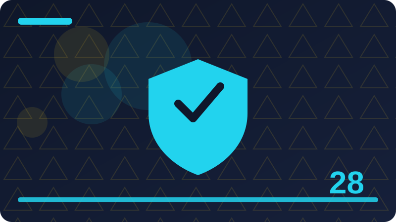

Chapter 28: Workplace Security Habits

Section 1: Why Workplace Security Matters
Workplace security protects not only a company's systems but also colleagues, customers, and the employee's own job, because one careless action can affect many people. You do not need to be an expert to use this idea well. You need a simple habit, a short pause, and a trusted way to check before you act.
One key idea here is how a single compromised work account can affect a whole organisation. Put this point into practice with a small, concrete step you can do today rather than a big promise for later. Small steps are easier to repeat, easier to remember under stress, and easier to teach to family or colleagues. Write the step down if it helps, and keep it somewhere you will actually see it.
One key idea here is why workplace security is a shared responsibility, not only an IT task. Watch for the common mistake connected to this point, which is usually acting first and checking later. Reversing that order changes the outcome: check first, using a channel you trust, and only then decide. Checking first costs a few minutes; recovering later can cost weeks.
One key idea here is how customer trust depends on staff handling data carefully. If you are unsure how this point applies to your situation, compare it with a safe example you already know. Ask yourself what is different, what is missing, and who could confirm it for you. A trusted person, an official website you reach yourself, or an official phone number you find independently can all help.
One key idea here is why small daily habits matter more than rare large security events. Teach this point to someone else in one short sentence when you have the chance. Teaching forces you to be clear, and it helps the other person too. If they ask a question you cannot answer, that question shows you exactly what to learn or check next.
Consider a busy day when you are tired and rushing between tasks. That is exactly when a simple habit matters most, because you will not have time to think deeply. A habit you have practised, such as pausing, checking independently, and keeping a record, will carry you through even when your attention is divided.
The main test of this section is simple: can you explain the safe choice to someone else, and can you do it calmly when you feel rushed? If the answer is yes, you have understood the heart of it. When in doubt, choose the safer and slower option, and keep a brief record of what you saw, when you saw it, and what you did next. A short record like that helps you explain the situation clearly later, and it helps anyone supporting you to give better advice. If something still feels unclear after you have checked, ask a trusted person before you take any step that cannot easily be undone.
Check: In your own words, what is the safest first step when you face why workplace security matters, and how would you check it before acting?
Section 2: Your Work Account Is a Target
Work accounts are valuable targets because they may open email, files, customer records, and internal tools, and attackers often target staff rather than systems directly. The goal of this section is practical confidence: you will know what to look for, what to do first, and what to avoid doing when you feel unsure.
One key idea here is how work email addresses are found and used in targeted messages. Watch for the common mistake connected to this point, which is usually acting first and checking later. Reversing that order changes the outcome: check first, using a channel you trust, and only then decide. Checking first costs a few minutes; recovering later can cost weeks.
One key idea here is why a work account password must never be reused elsewhere. If you are unsure how this point applies to your situation, compare it with a safe example you already know. Ask yourself what is different, what is missing, and who could confirm it for you. A trusted person, an official website you reach yourself, or an official phone number you find independently can all help.
One key idea here is how access to internal tools increases the value of a stolen account. Teach this point to someone else in one short sentence when you have the chance. Teaching forces you to be clear, and it helps the other person too. If they ask a question you cannot answer, that question shows you exactly what to learn or check next.
One key idea here is why reporting a suspicious work message quickly helps the whole team. Keep a short note about how you handled this point the first time you used it. Notes turn a one-time lesson into a repeatable habit, and they give you something useful to look back on if a similar situation appears again.
Picture explaining this idea to a friend who is worried and wants a quick answer. You would not rush them, and you would not guess. You would help them slow down, look at the evidence, and choose the safest next step together. Treat yourself with that same patience when you are the one facing the decision.
Keep this section in mind as a checklist, not as a rule to memorise word for word. Checklists work because they are short, practical, and usable even on a difficult day. When in doubt, choose the safer and slower option, and keep a brief record of what you saw, when you saw it, and what you did next. A short record like that helps you explain the situation clearly later, and it helps anyone supporting you to give better advice. If something still feels unclear after you have checked, ask a trusted person before you take any step that cannot easily be undone. Remember that a genuine organisation will understand a careful pause, while pressure to act at once is itself a reason to be cautious.
def work_login_checklist():
"""Print a defensive work login checklist for your own account."""
for item in ["Use a unique work password.", "Approve multi-factor prompts only for logins you started.", "Lock your screen when you leave your desk.", "Report unexpected login prompts to IT."]:
print("[ ]", item)
work_login_checklist()Check: In your own words, what is the safest first step when you face your work account is a target, and how would you check it before acting?
Section 3: Passwords and Logins at Work
Work login habits include strong unique passwords, approved password managers where provided, and never sharing credentials with colleagues, even trusted ones. Think of this as one building block. On its own it is simple, but together with the other habits in this book it forms a strong everyday defence.
One key idea here is how to use a work-approved password manager correctly. If you are unsure how this point applies to your situation, compare it with a safe example you already know. Ask yourself what is different, what is missing, and who could confirm it for you. A trusted person, an official website you reach yourself, or an official phone number you find independently can all help.
One key idea here is why sharing a login, even temporarily, breaks accountability. Teach this point to someone else in one short sentence when you have the chance. Teaching forces you to be clear, and it helps the other person too. If they ask a question you cannot answer, that question shows you exactly what to learn or check next.
One key idea here is how to handle a forgotten work password through official reset routes. Keep a short note about how you handled this point the first time you used it. Notes turn a one-time lesson into a repeatable habit, and they give you something useful to look back on if a similar situation appears again.
One key idea here is why logging out on shared computers protects the next user. Start by naming the point clearly in your own words, then ask what a safe version of it would look like in real life. A safe version is usually slower, simpler, and easier to explain to someone you trust. If you cannot explain it simply, that is a sign to pause and check again before you continue.
Think about a time you almost acted on incomplete information. Most people have had that experience, and it does not mean they were careless. It means the situation was designed, or simply happened, to be confusing. A clear habit gives you a way back to calm thinking in that moment.
You do not have to be perfect at this. You have to be consistent enough that the safe choice becomes your normal choice, and that consistency is built one small decision at a time. When in doubt, choose the safer and slower option, and keep a brief record of what you saw, when you saw it, and what you did next. A short record like that helps you explain the situation clearly later, and it helps anyone supporting you to give better advice. If something still feels unclear after you have checked, ask a trusted person before you take any step that cannot easily be undone. Remember that a genuine organisation will understand a careful pause, while pressure to act at once is itself a reason to be cautious.
Check: In your own words, what is the safest first step when you face passwords and logins at work, and how would you check it before acting?
Section 4: Multi-Factor Authentication at Work
Multi-factor authentication at work adds a second check, such as an app code or hardware key, so a stolen password alone does not give access. Many people learn this lesson only after something goes wrong. Reading it now gives you the chance to practise it while nothing is at stake.
One key idea here is how to set up work multi-factor authentication on approved devices. Teach this point to someone else in one short sentence when you have the chance. Teaching forces you to be clear, and it helps the other person too. If they ask a question you cannot answer, that question shows you exactly what to learn or check next.
One key idea here is why approval requests should never be accepted unless you started the login. Keep a short note about how you handled this point the first time you used it. Notes turn a one-time lesson into a repeatable habit, and they give you something useful to look back on if a similar situation appears again.
One key idea here is how to report unexpected authentication prompts immediately. Start by naming the point clearly in your own words, then ask what a safe version of it would look like in real life. A safe version is usually slower, simpler, and easier to explain to someone you trust. If you cannot explain it simply, that is a sign to pause and check again before you continue.
One key idea here is why keeping backup authentication methods up to date matters. Put this point into practice with a small, concrete step you can do today rather than a big promise for later. Small steps are easier to repeat, easier to remember under stress, and easier to teach to family or colleagues. Write the step down if it helps, and keep it somewhere you will actually see it.
Imagine you receive a message that feels urgent and slightly confusing. Your first feeling may be worry, and worry makes it tempting to reply at once. Instead, take a breath, leave the message unanswered, and check the facts through a route you trust. That short pause is often the whole difference between a safe outcome and a costly one.
Before you move on, pick one action from this section and decide when you will do it. A habit that has a time attached to it is far more likely to happen than a good intention with no plan behind it. When in doubt, choose the safer and slower option, and keep a brief record of what you saw, when you saw it, and what you did next. A short record like that helps you explain the situation clearly later, and it helps anyone supporting you to give better advice. If something still feels unclear after you have checked, ask a trusted person before you take any step that cannot easily be undone. Remember that a genuine organisation will understand a careful pause, while pressure to act at once is itself a reason to be cautious.
Check: In your own words, what is the safest first step when you face multi-factor authentication at work, and how would you check it before acting?
Section 5: Locking Screens and Devices
Locking screens and devices prevents casual access by visitors, colleagues, or anyone who picks up an unattended phone or laptop. A good rule here is to slow down whenever pressure appears. Pressure is often a tool used to push people past their normal good judgement.
One key idea here is how to set a short automatic lock time on work devices. Keep a short note about how you handled this point the first time you used it. Notes turn a one-time lesson into a repeatable habit, and they give you something useful to look back on if a similar situation appears again.
One key idea here is why locking a screen before leaving a desk is a basic habit. Start by naming the point clearly in your own words, then ask what a safe version of it would look like in real life. A safe version is usually slower, simpler, and easier to explain to someone you trust. If you cannot explain it simply, that is a sign to pause and check again before you continue.
One key idea here is how to secure a work laptop during travel and meetings. Put this point into practice with a small, concrete step you can do today rather than a big promise for later. Small steps are easier to repeat, easier to remember under stress, and easier to teach to family or colleagues. Write the step down if it helps, and keep it somewhere you will actually see it.
One key idea here is why a locked device still needs encryption and strong login protection. Watch for the common mistake connected to this point, which is usually acting first and checking later. Reversing that order changes the outcome: check first, using a channel you trust, and only then decide. Checking first costs a few minutes; recovering later can cost weeks.
Consider a busy day when you are tired and rushing between tasks. That is exactly when a simple habit matters most, because you will not have time to think deeply. A habit you have practised, such as pausing, checking independently, and keeping a record, will carry you through even when your attention is divided.
The main test of this section is simple: can you explain the safe choice to someone else, and can you do it calmly when you feel rushed? If the answer is yes, you have understood the heart of it. When in doubt, choose the safer and slower option, and keep a brief record of what you saw, when you saw it, and what you did next. A short record like that helps you explain the situation clearly later, and it helps anyone supporting you to give better advice. If something still feels unclear after you have checked, ask a trusted person before you take any step that cannot easily be undone. Remember that a genuine organisation will understand a careful pause, while pressure to act at once is itself a reason to be cautious.
Check: In your own words, what is the safest first step when you face locking screens and devices, and how would you check it before acting?
Section 6: Clean Desk, Clear Screen
A clean desk and clear screen policy means sensitive papers and screens are not left visible to people who walk past or visit. This matters because small decisions made in a hurry can have large consequences, and a calm, clear habit protects you better than fear or speed ever will.
One key idea here is how to store sensitive papers in locked storage at the end of the day. Start by naming the point clearly in your own words, then ask what a safe version of it would look like in real life. A safe version is usually slower, simpler, and easier to explain to someone you trust. If you cannot explain it simply, that is a sign to pause and check again before you continue.
One key idea here is why screen privacy filters help in open offices and public places. Put this point into practice with a small, concrete step you can do today rather than a big promise for later. Small steps are easier to repeat, easier to remember under stress, and easier to teach to family or colleagues. Write the step down if it helps, and keep it somewhere you will actually see it.
One key idea here is how to handle printed documents that are no longer needed. Watch for the common mistake connected to this point, which is usually acting first and checking later. Reversing that order changes the outcome: check first, using a channel you trust, and only then decide. Checking first costs a few minutes; recovering later can cost weeks.
One key idea here is why visitors should not be left alone near sensitive material. If you are unsure how this point applies to your situation, compare it with a safe example you already know. Ask yourself what is different, what is missing, and who could confirm it for you. A trusted person, an official website you reach yourself, or an official phone number you find independently can all help.
Picture explaining this idea to a friend who is worried and wants a quick answer. You would not rush them, and you would not guess. You would help them slow down, look at the evidence, and choose the safest next step together. Treat yourself with that same patience when you are the one facing the decision.
Keep this section in mind as a checklist, not as a rule to memorise word for word. Checklists work because they are short, practical, and usable even on a difficult day. When in doubt, choose the safer and slower option, and keep a brief record of what you saw, when you saw it, and what you did next. A short record like that helps you explain the situation clearly later, and it helps anyone supporting you to give better advice. If something still feels unclear after you have checked, ask a trusted person before you take any step that cannot easily be undone.
Check: In your own words, what is the safest first step when you face clean desk, clear screen, and how would you check it before acting?
Section 7: Email Habits at Work
Work email habits include checking senders carefully, not clicking unexpected links or attachments, and confirming unusual requests through a separate channel. You do not need to be an expert to use this idea well. You need a simple habit, a short pause, and a trusted way to check before you act.
One key idea here is how to check a sender address and unexpected attachment before opening. Put this point into practice with a small, concrete step you can do today rather than a big promise for later. Small steps are easier to repeat, easier to remember under stress, and easier to teach to family or colleagues. Write the step down if it helps, and keep it somewhere you will actually see it.
One key idea here is why forwarding work email to personal accounts is usually prohibited. Watch for the common mistake connected to this point, which is usually acting first and checking later. Reversing that order changes the outcome: check first, using a channel you trust, and only then decide. Checking first costs a few minutes; recovering later can cost weeks.
One key idea here is how to report phishing using the organisation's reporting tool. If you are unsure how this point applies to your situation, compare it with a safe example you already know. Ask yourself what is different, what is missing, and who could confirm it for you. A trusted person, an official website you reach yourself, or an official phone number you find independently can all help.
One key idea here is why confidential information should not be sent by ordinary email. Teach this point to someone else in one short sentence when you have the chance. Teaching forces you to be clear, and it helps the other person too. If they ask a question you cannot answer, that question shows you exactly what to learn or check next.
Think about a time you almost acted on incomplete information. Most people have had that experience, and it does not mean they were careless. It means the situation was designed, or simply happened, to be confusing. A clear habit gives you a way back to calm thinking in that moment.
You do not have to be perfect at this. You have to be consistent enough that the safe choice becomes your normal choice, and that consistency is built one small decision at a time. When in doubt, choose the safer and slower option, and keep a brief record of what you saw, when you saw it, and what you did next. A short record like that helps you explain the situation clearly later, and it helps anyone supporting you to give better advice. If something still feels unclear after you have checked, ask a trusted person before you take any step that cannot easily be undone. Remember that a genuine organisation will understand a careful pause, while pressure to act at once is itself a reason to be cautious.
Check: In your own words, what is the safest first step when you face email habits at work, and how would you check it before acting?
Section 8: Spotting Phishing at Work
Workplace phishing often impersonates managers, suppliers, IT support, or customers, and uses urgency or authority to bypass normal checks. The goal of this section is practical confidence: you will know what to look for, what to do first, and what to avoid doing when you feel unsure.
One key idea here is how to recognise impersonation of managers and suppliers. Watch for the common mistake connected to this point, which is usually acting first and checking later. Reversing that order changes the outcome: check first, using a channel you trust, and only then decide. Checking first costs a few minutes; recovering later can cost weeks.
One key idea here is why an urgent payment or data request needs independent verification. If you are unsure how this point applies to your situation, compare it with a safe example you already know. Ask yourself what is different, what is missing, and who could confirm it for you. A trusted person, an official website you reach yourself, or an official phone number you find independently can all help.
One key idea here is how to use the report button instead of deleting a suspicious message. Teach this point to someone else in one short sentence when you have the chance. Teaching forces you to be clear, and it helps the other person too. If they ask a question you cannot answer, that question shows you exactly what to learn or check next.
One key idea here is why reporting quickly protects colleagues who received the same message. Keep a short note about how you handled this point the first time you used it. Notes turn a one-time lesson into a repeatable habit, and they give you something useful to look back on if a similar situation appears again.
Imagine you receive a message that feels urgent and slightly confusing. Your first feeling may be worry, and worry makes it tempting to reply at once. Instead, take a breath, leave the message unanswered, and check the facts through a route you trust. That short pause is often the whole difference between a safe outcome and a costly one.
Before you move on, pick one action from this section and decide when you will do it. A habit that has a time attached to it is far more likely to happen than a good intention with no plan behind it. When in doubt, choose the safer and slower option, and keep a brief record of what you saw, when you saw it, and what you did next. A short record like that helps you explain the situation clearly later, and it helps anyone supporting you to give better advice. If something still feels unclear after you have checked, ask a trusted person before you take any step that cannot easily be undone. Remember that a genuine organisation will understand a careful pause, while pressure to act at once is itself a reason to be cautious.
Check: In your own words, what is the safest first step when you face spotting phishing at work, and how would you check it before acting?
Section 9: Handling Sensitive Customer Data
Sensitive customer data includes names, contact details, payment information, and health or personal records, and it must only be used for its proper work purpose. Think of this as one building block. On its own it is simple, but together with the other habits in this book it forms a strong everyday defence.
One key idea here is how to access only the customer data your role genuinely needs. If you are unsure how this point applies to your situation, compare it with a safe example you already know. Ask yourself what is different, what is missing, and who could confirm it for you. A trusted person, an official website you reach yourself, or an official phone number you find independently can all help.
One key idea here is why customer data should never be copied to personal devices. Teach this point to someone else in one short sentence when you have the chance. Teaching forces you to be clear, and it helps the other person too. If they ask a question you cannot answer, that question shows you exactly what to learn or check next.
One key idea here is how to share customer data only through approved systems. Keep a short note about how you handled this point the first time you used it. Notes turn a one-time lesson into a repeatable habit, and they give you something useful to look back on if a similar situation appears again.
One key idea here is why mistakes with customer data must be reported, not hidden. Start by naming the point clearly in your own words, then ask what a safe version of it would look like in real life. A safe version is usually slower, simpler, and easier to explain to someone you trust. If you cannot explain it simply, that is a sign to pause and check again before you continue.
Consider a busy day when you are tired and rushing between tasks. That is exactly when a simple habit matters most, because you will not have time to think deeply. A habit you have practised, such as pausing, checking independently, and keeping a record, will carry you through even when your attention is divided.
The main test of this section is simple: can you explain the safe choice to someone else, and can you do it calmly when you feel rushed? If the answer is yes, you have understood the heart of it. When in doubt, choose the safer and slower option, and keep a brief record of what you saw, when you saw it, and what you did next. A short record like that helps you explain the situation clearly later, and it helps anyone supporting you to give better advice. If something still feels unclear after you have checked, ask a trusted person before you take any step that cannot easily be undone. Remember that a genuine organisation will understand a careful pause, while pressure to act at once is itself a reason to be cautious.
Check: In your own words, what is the safest first step when you face handling sensitive customer data, and how would you check it before acting?
Section 10: Least Privilege in Daily Work
Least privilege means each person has only the access their job requires, which limits damage if an account is misused and reduces accidental exposure. Many people learn this lesson only after something goes wrong. Reading it now gives you the chance to practise it while nothing is at stake.
One key idea here is how to request access through proper approval rather than sharing logins. Teach this point to someone else in one short sentence when you have the chance. Teaching forces you to be clear, and it helps the other person too. If they ask a question you cannot answer, that question shows you exactly what to learn or check next.
One key idea here is why access should be reviewed when roles change. Keep a short note about how you handled this point the first time you used it. Notes turn a one-time lesson into a repeatable habit, and they give you something useful to look back on if a similar situation appears again.
One key idea here is how to handle a task that needs access you do not have. Start by naming the point clearly in your own words, then ask what a safe version of it would look like in real life. A safe version is usually slower, simpler, and easier to explain to someone you trust. If you cannot explain it simply, that is a sign to pause and check again before you continue.
One key idea here is why temporary access should be removed when the task ends. Put this point into practice with a small, concrete step you can do today rather than a big promise for later. Small steps are easier to repeat, easier to remember under stress, and easier to teach to family or colleagues. Write the step down if it helps, and keep it somewhere you will actually see it.
Picture explaining this idea to a friend who is worried and wants a quick answer. You would not rush them, and you would not guess. You would help them slow down, look at the evidence, and choose the safest next step together. Treat yourself with that same patience when you are the one facing the decision.
Keep this section in mind as a checklist, not as a rule to memorise word for word. Checklists work because they are short, practical, and usable even on a difficult day. When in doubt, choose the safer and slower option, and keep a brief record of what you saw, when you saw it, and what you did next. A short record like that helps you explain the situation clearly later, and it helps anyone supporting you to give better advice. If something still feels unclear after you have checked, ask a trusted person before you take any step that cannot easily be undone. Remember that a genuine organisation will understand a careful pause, while pressure to act at once is itself a reason to be cautious.
Check: In your own words, what is the safest first step when you face least privilege in daily work, and how would you check it before acting?
Section 11: Safe File Sharing at Work
Safe file sharing uses approved tools, correct permissions, and expiry where possible, rather than personal drives, public links, or email attachments. A good rule here is to slow down whenever pressure appears. Pressure is often a tool used to push people past their normal good judgement.
One key idea here is how to set sharing permissions to specific people, not anyone with a link. Keep a short note about how you handled this point the first time you used it. Notes turn a one-time lesson into a repeatable habit, and they give you something useful to look back on if a similar situation appears again.
One key idea here is why expiry dates on shared links reduce long-term exposure. Start by naming the point clearly in your own words, then ask what a safe version of it would look like in real life. A safe version is usually slower, simpler, and easier to explain to someone you trust. If you cannot explain it simply, that is a sign to pause and check again before you continue.
One key idea here is how to check who has access before sharing a sensitive file. Put this point into practice with a small, concrete step you can do today rather than a big promise for later. Small steps are easier to repeat, easier to remember under stress, and easier to teach to family or colleagues. Write the step down if it helps, and keep it somewhere you will actually see it.
One key idea here is why personal cloud accounts should not hold work files. Watch for the common mistake connected to this point, which is usually acting first and checking later. Reversing that order changes the outcome: check first, using a channel you trust, and only then decide. Checking first costs a few minutes; recovering later can cost weeks.
Think about a time you almost acted on incomplete information. Most people have had that experience, and it does not mean they were careless. It means the situation was designed, or simply happened, to be confusing. A clear habit gives you a way back to calm thinking in that moment.
You do not have to be perfect at this. You have to be consistent enough that the safe choice becomes your normal choice, and that consistency is built one small decision at a time. When in doubt, choose the safer and slower option, and keep a brief record of what you saw, when you saw it, and what you did next. A short record like that helps you explain the situation clearly later, and it helps anyone supporting you to give better advice. If something still feels unclear after you have checked, ask a trusted person before you take any step that cannot easily be undone. Remember that a genuine organisation will understand a careful pause, while pressure to act at once is itself a reason to be cautious.
Check: In your own words, what is the safest first step when you face safe file sharing at work, and how would you check it before acting?
Section 12: Meetings, Calls and Confidential Talk
Confidential work should not be discussed where strangers can hear it, including lifts, cafes, public transport, and video calls with unknown participants. This matters because small decisions made in a hurry can have large consequences, and a calm, clear habit protects you better than fear or speed ever will.
One key idea here is how to check who is present before discussing sensitive topics. Start by naming the point clearly in your own words, then ask what a safe version of it would look like in real life. A safe version is usually slower, simpler, and easier to explain to someone you trust. If you cannot explain it simply, that is a sign to pause and check again before you continue.
One key idea here is why speakerphone calls in public places risk overhearing. Put this point into practice with a small, concrete step you can do today rather than a big promise for later. Small steps are easier to repeat, easier to remember under stress, and easier to teach to family or colleagues. Write the step down if it helps, and keep it somewhere you will actually see it.
One key idea here is how to handle confidential documents visible on a shared screen. Watch for the common mistake connected to this point, which is usually acting first and checking later. Reversing that order changes the outcome: check first, using a channel you trust, and only then decide. Checking first costs a few minutes; recovering later can cost weeks.
One key idea here is why meeting recordings need the same protection as notes. If you are unsure how this point applies to your situation, compare it with a safe example you already know. Ask yourself what is different, what is missing, and who could confirm it for you. A trusted person, an official website you reach yourself, or an official phone number you find independently can all help.
Imagine you receive a message that feels urgent and slightly confusing. Your first feeling may be worry, and worry makes it tempting to reply at once. Instead, take a breath, leave the message unanswered, and check the facts through a route you trust. That short pause is often the whole difference between a safe outcome and a costly one.
Before you move on, pick one action from this section and decide when you will do it. A habit that has a time attached to it is far more likely to happen than a good intention with no plan behind it. When in doubt, choose the safer and slower option, and keep a brief record of what you saw, when you saw it, and what you did next. A short record like that helps you explain the situation clearly later, and it helps anyone supporting you to give better advice. If something still feels unclear after you have checked, ask a trusted person before you take any step that cannot easily be undone.
Check: In your own words, what is the safest first step when you face meetings, calls and confidential talk, and how would you check it before acting?
Section 13: Working From Home Securely
Working from home securely means using approved connections, keeping work and personal use separate, and protecting the home network and devices. You do not need to be an expert to use this idea well. You need a simple habit, a short pause, and a trusted way to check before you act.
One key idea here is how to use the organisation's approved remote access method. Put this point into practice with a small, concrete step you can do today rather than a big promise for later. Small steps are easier to repeat, easier to remember under stress, and easier to teach to family or colleagues. Write the step down if it helps, and keep it somewhere you will actually see it.
One key idea here is why family members should not use work devices or accounts. Watch for the common mistake connected to this point, which is usually acting first and checking later. Reversing that order changes the outcome: check first, using a channel you trust, and only then decide. Checking first costs a few minutes; recovering later can cost weeks.
One key idea here is how to keep work files off personal computers. If you are unsure how this point applies to your situation, compare it with a safe example you already know. Ask yourself what is different, what is missing, and who could confirm it for you. A trusted person, an official website you reach yourself, or an official phone number you find independently can all help.
One key idea here is why a home router password and updates matter for remote work. Teach this point to someone else in one short sentence when you have the chance. Teaching forces you to be clear, and it helps the other person too. If they ask a question you cannot answer, that question shows you exactly what to learn or check next.
Consider a busy day when you are tired and rushing between tasks. That is exactly when a simple habit matters most, because you will not have time to think deeply. A habit you have practised, such as pausing, checking independently, and keeping a record, will carry you through even when your attention is divided.
The main test of this section is simple: can you explain the safe choice to someone else, and can you do it calmly when you feel rushed? If the answer is yes, you have understood the heart of it. When in doubt, choose the safer and slower option, and keep a brief record of what you saw, when you saw it, and what you did next. A short record like that helps you explain the situation clearly later, and it helps anyone supporting you to give better advice. If something still feels unclear after you have checked, ask a trusted person before you take any step that cannot easily be undone. Remember that a genuine organisation will understand a careful pause, while pressure to act at once is itself a reason to be cautious.
Check: In your own words, what is the safest first step when you face working from home securely, and how would you check it before acting?
Section 14: Public Places and Work Devices
Work in public places brings risks from overlooked screens, unsecured networks, and device theft, and simple precautions reduce all three. The goal of this section is practical confidence: you will know what to look for, what to do first, and what to avoid doing when you feel unsure.
One key idea here is how to position a screen away from passers-by in public. Watch for the common mistake connected to this point, which is usually acting first and checking later. Reversing that order changes the outcome: check first, using a channel you trust, and only then decide. Checking first costs a few minutes; recovering later can cost weeks.
One key idea here is why public Wi-Fi should only be used with approved protection. If you are unsure how this point applies to your situation, compare it with a safe example you already know. Ask yourself what is different, what is missing, and who could confirm it for you. A trusted person, an official website you reach yourself, or an official phone number you find independently can all help.
One key idea here is how to keep a work device in sight and secured. Teach this point to someone else in one short sentence when you have the chance. Teaching forces you to be clear, and it helps the other person too. If they ask a question you cannot answer, that question shows you exactly what to learn or check next.
One key idea here is why sensitive work should wait for a private setting when possible. Keep a short note about how you handled this point the first time you used it. Notes turn a one-time lesson into a repeatable habit, and they give you something useful to look back on if a similar situation appears again.
Picture explaining this idea to a friend who is worried and wants a quick answer. You would not rush them, and you would not guess. You would help them slow down, look at the evidence, and choose the safest next step together. Treat yourself with that same patience when you are the one facing the decision.
Keep this section in mind as a checklist, not as a rule to memorise word for word. Checklists work because they are short, practical, and usable even on a difficult day. When in doubt, choose the safer and slower option, and keep a brief record of what you saw, when you saw it, and what you did next. A short record like that helps you explain the situation clearly later, and it helps anyone supporting you to give better advice. If something still feels unclear after you have checked, ask a trusted person before you take any step that cannot easily be undone. Remember that a genuine organisation will understand a careful pause, while pressure to act at once is itself a reason to be cautious.
Check: In your own words, what is the safest first step when you face public places and work devices, and how would you check it before acting?
Section 15: USB Drives and Removable Media
USB drives and removable media can carry malware and can leak data if lost, so many workplaces restrict them and require approved, encrypted devices. Think of this as one building block. On its own it is simple, but together with the other habits in this book it forms a strong everyday defence.
One key idea here is why a found USB drive should never be plugged into a work computer. If you are unsure how this point applies to your situation, compare it with a safe example you already know. Ask yourself what is different, what is missing, and who could confirm it for you. A trusted person, an official website you reach yourself, or an official phone number you find independently can all help.
One key idea here is how approved encrypted drives differ from ordinary personal drives. Teach this point to someone else in one short sentence when you have the chance. Teaching forces you to be clear, and it helps the other person too. If they ask a question you cannot answer, that question shows you exactly what to learn or check next.
One key idea here is why copying work data to personal media is usually prohibited. Keep a short note about how you handled this point the first time you used it. Notes turn a one-time lesson into a repeatable habit, and they give you something useful to look back on if a similar situation appears again.
One key idea here is how to report a lost work drive immediately. Start by naming the point clearly in your own words, then ask what a safe version of it would look like in real life. A safe version is usually slower, simpler, and easier to explain to someone you trust. If you cannot explain it simply, that is a sign to pause and check again before you continue.
Think about a time you almost acted on incomplete information. Most people have had that experience, and it does not mean they were careless. It means the situation was designed, or simply happened, to be confusing. A clear habit gives you a way back to calm thinking in that moment.
You do not have to be perfect at this. You have to be consistent enough that the safe choice becomes your normal choice, and that consistency is built one small decision at a time. When in doubt, choose the safer and slower option, and keep a brief record of what you saw, when you saw it, and what you did next. A short record like that helps you explain the situation clearly later, and it helps anyone supporting you to give better advice. If something still feels unclear after you have checked, ask a trusted person before you take any step that cannot easily be undone. Remember that a genuine organisation will understand a careful pause, while pressure to act at once is itself a reason to be cautious.
Check: In your own words, what is the safest first step when you face usb drives and removable media, and how would you check it before acting?
Section 16: Personal Devices at Work
Personal devices used for work, where allowed, must follow workplace rules on apps, updates, passwords, and separation of work data. Many people learn this lesson only after something goes wrong. Reading it now gives you the chance to practise it while nothing is at stake.
One key idea here is how to follow bring-your-own-device rules where they exist. Teach this point to someone else in one short sentence when you have the chance. Teaching forces you to be clear, and it helps the other person too. If they ask a question you cannot answer, that question shows you exactly what to learn or check next.
One key idea here is why work apps on a personal phone need a lock and updates. Keep a short note about how you handled this point the first time you used it. Notes turn a one-time lesson into a repeatable habit, and they give you something useful to look back on if a similar situation appears again.
One key idea here is how to separate work data from personal photos and messages. Start by naming the point clearly in your own words, then ask what a safe version of it would look like in real life. A safe version is usually slower, simpler, and easier to explain to someone you trust. If you cannot explain it simply, that is a sign to pause and check again before you continue.
One key idea here is why leaving a job means removing work access from personal devices. Put this point into practice with a small, concrete step you can do today rather than a big promise for later. Small steps are easier to repeat, easier to remember under stress, and easier to teach to family or colleagues. Write the step down if it helps, and keep it somewhere you will actually see it.
Imagine you receive a message that feels urgent and slightly confusing. Your first feeling may be worry, and worry makes it tempting to reply at once. Instead, take a breath, leave the message unanswered, and check the facts through a route you trust. That short pause is often the whole difference between a safe outcome and a costly one.
Before you move on, pick one action from this section and decide when you will do it. A habit that has a time attached to it is far more likely to happen than a good intention with no plan behind it. When in doubt, choose the safer and slower option, and keep a brief record of what you saw, when you saw it, and what you did next. A short record like that helps you explain the situation clearly later, and it helps anyone supporting you to give better advice. If something still feels unclear after you have checked, ask a trusted person before you take any step that cannot easily be undone. Remember that a genuine organisation will understand a careful pause, while pressure to act at once is itself a reason to be cautious.
Check: In your own words, what is the safest first step when you face personal devices at work, and how would you check it before acting?
Section 17: Social Media and Work
Social media posts about work can accidentally reveal projects, clients, locations, or internal details, even when no secret is intentionally shared. A good rule here is to slow down whenever pressure appears. Pressure is often a tool used to push people past their normal good judgement.
One key idea here is how to avoid posting photos that show screens, badges, or documents. Keep a short note about how you handled this point the first time you used it. Notes turn a one-time lesson into a repeatable habit, and they give you something useful to look back on if a similar situation appears again.
One key idea here is why job details and client names should not be shared publicly. Start by naming the point clearly in your own words, then ask what a safe version of it would look like in real life. A safe version is usually slower, simpler, and easier to explain to someone you trust. If you cannot explain it simply, that is a sign to pause and check again before you continue.
One key idea here is how to check with a manager before posting about work. Put this point into practice with a small, concrete step you can do today rather than a big promise for later. Small steps are easier to repeat, easier to remember under stress, and easier to teach to family or colleagues. Write the step down if it helps, and keep it somewhere you will actually see it.
One key idea here is why personal opinions posted as staff can be mistaken for company views. Watch for the common mistake connected to this point, which is usually acting first and checking later. Reversing that order changes the outcome: check first, using a channel you trust, and only then decide. Checking first costs a few minutes; recovering later can cost weeks.
Consider a busy day when you are tired and rushing between tasks. That is exactly when a simple habit matters most, because you will not have time to think deeply. A habit you have practised, such as pausing, checking independently, and keeping a record, will carry you through even when your attention is divided.
The main test of this section is simple: can you explain the safe choice to someone else, and can you do it calmly when you feel rushed? If the answer is yes, you have understood the heart of it. When in doubt, choose the safer and slower option, and keep a brief record of what you saw, when you saw it, and what you did next. A short record like that helps you explain the situation clearly later, and it helps anyone supporting you to give better advice. If something still feels unclear after you have checked, ask a trusted person before you take any step that cannot easily be undone. Remember that a genuine organisation will understand a careful pause, while pressure to act at once is itself a reason to be cautious.
Check: In your own words, what is the safest first step when you face social media and work, and how would you check it before acting?
Section 18: Visitors, Tailgating and Physical Access
Physical access rules, such as badges, visitor sign-in, and not holding doors open, protect the same systems that digital controls protect. This matters because small decisions made in a hurry can have large consequences, and a calm, clear habit protects you better than fear or speed ever will.
One key idea here is how tailgating lets an unauthorised person enter a secure area. Start by naming the point clearly in your own words, then ask what a safe version of it would look like in real life. A safe version is usually slower, simpler, and easier to explain to someone you trust. If you cannot explain it simply, that is a sign to pause and check again before you continue.
One key idea here is why visitors should be escorted and badged. Put this point into practice with a small, concrete step you can do today rather than a big promise for later. Small steps are easier to repeat, easier to remember under stress, and easier to teach to family or colleagues. Write the step down if it helps, and keep it somewhere you will actually see it.
One key idea here is how to challenge an unfamiliar person politely and safely. Watch for the common mistake connected to this point, which is usually acting first and checking later. Reversing that order changes the outcome: check first, using a channel you trust, and only then decide. Checking first costs a few minutes; recovering later can cost weeks.
One key idea here is why a lost badge should be reported and deactivated at once. If you are unsure how this point applies to your situation, compare it with a safe example you already know. Ask yourself what is different, what is missing, and who could confirm it for you. A trusted person, an official website you reach yourself, or an official phone number you find independently can all help.
Picture explaining this idea to a friend who is worried and wants a quick answer. You would not rush them, and you would not guess. You would help them slow down, look at the evidence, and choose the safest next step together. Treat yourself with that same patience when you are the one facing the decision.
Keep this section in mind as a checklist, not as a rule to memorise word for word. Checklists work because they are short, practical, and usable even on a difficult day. When in doubt, choose the safer and slower option, and keep a brief record of what you saw, when you saw it, and what you did next. A short record like that helps you explain the situation clearly later, and it helps anyone supporting you to give better advice. If something still feels unclear after you have checked, ask a trusted person before you take any step that cannot easily be undone. Remember that a genuine organisation will understand a careful pause, while pressure to act at once is itself a reason to be cautious.
Check: In your own words, what is the safest first step when you face visitors, tailgating and physical access, and how would you check it before acting?
Section 19: Printing, Scanning and Paper Records
Printers and paper records hold sensitive information, and uncollected printouts, scanned files, and disposal all need care. You do not need to be an expert to use this idea well. You need a simple habit, a short pause, and a trusted way to check before you act.
One key idea here is how to collect printouts immediately and avoid leaving them on printers. Put this point into practice with a small, concrete step you can do today rather than a big promise for later. Small steps are easier to repeat, easier to remember under stress, and easier to teach to family or colleagues. Write the step down if it helps, and keep it somewhere you will actually see it.
One key idea here is why secure disposal bins exist for sensitive paper. Watch for the common mistake connected to this point, which is usually acting first and checking later. Reversing that order changes the outcome: check first, using a channel you trust, and only then decide. Checking first costs a few minutes; recovering later can cost weeks.
One key idea here is how scanned documents should be stored in approved locations. If you are unsure how this point applies to your situation, compare it with a safe example you already know. Ask yourself what is different, what is missing, and who could confirm it for you. A trusted person, an official website you reach yourself, or an official phone number you find independently can all help.
One key idea here is why printer settings and access should follow workplace policy. Teach this point to someone else in one short sentence when you have the chance. Teaching forces you to be clear, and it helps the other person too. If they ask a question you cannot answer, that question shows you exactly what to learn or check next.
Think about a time you almost acted on incomplete information. Most people have had that experience, and it does not mean they were careless. It means the situation was designed, or simply happened, to be confusing. A clear habit gives you a way back to calm thinking in that moment.
You do not have to be perfect at this. You have to be consistent enough that the safe choice becomes your normal choice, and that consistency is built one small decision at a time. When in doubt, choose the safer and slower option, and keep a brief record of what you saw, when you saw it, and what you did next. A short record like that helps you explain the situation clearly later, and it helps anyone supporting you to give better advice. If something still feels unclear after you have checked, ask a trusted person before you take any step that cannot easily be undone. Remember that a genuine organisation will understand a careful pause, while pressure to act at once is itself a reason to be cautious.
Check: In your own words, what is the safest first step when you face printing, scanning and paper records, and how would you check it before acting?
Section 20: Software Installation at Work
Installing unapproved software on work devices can introduce malware, break compliance, and create support problems, so approval routes exist for a reason. The goal of this section is practical confidence: you will know what to look for, what to do first, and what to avoid doing when you feel unsure.
One key idea here is how to request software through the organisation's approval process. Watch for the common mistake connected to this point, which is usually acting first and checking later. Reversing that order changes the outcome: check first, using a channel you trust, and only then decide. Checking first costs a few minutes; recovering later can cost weeks.
One key idea here is why free tools downloaded from the internet may carry hidden risks. If you are unsure how this point applies to your situation, compare it with a safe example you already know. Ask yourself what is different, what is missing, and who could confirm it for you. A trusted person, an official website you reach yourself, or an official phone number you find independently can all help.
One key idea here is how browser extensions also need approval on work devices. Teach this point to someone else in one short sentence when you have the chance. Teaching forces you to be clear, and it helps the other person too. If they ask a question you cannot answer, that question shows you exactly what to learn or check next.
One key idea here is why keeping approved software updated is part of the job. Keep a short note about how you handled this point the first time you used it. Notes turn a one-time lesson into a repeatable habit, and they give you something useful to look back on if a similar situation appears again.
Imagine you receive a message that feels urgent and slightly confusing. Your first feeling may be worry, and worry makes it tempting to reply at once. Instead, take a breath, leave the message unanswered, and check the facts through a route you trust. That short pause is often the whole difference between a safe outcome and a costly one.
Before you move on, pick one action from this section and decide when you will do it. A habit that has a time attached to it is far more likely to happen than a good intention with no plan behind it. When in doubt, choose the safer and slower option, and keep a brief record of what you saw, when you saw it, and what you did next. A short record like that helps you explain the situation clearly later, and it helps anyone supporting you to give better advice. If something still feels unclear after you have checked, ask a trusted person before you take any step that cannot easily be undone. Remember that a genuine organisation will understand a careful pause, while pressure to act at once is itself a reason to be cautious.
Check: In your own words, what is the safest first step when you face software installation at work, and how would you check it before acting?
Section 21: Updates and Patching at Work
Work device updates close known security gaps, and postponing them repeatedly leaves known weaknesses open to attackers. Think of this as one building block. On its own it is simple, but together with the other habits in this book it forms a strong everyday defence.
One key idea here is how to install work updates promptly when prompted. If you are unsure how this point applies to your situation, compare it with a safe example you already know. Ask yourself what is different, what is missing, and who could confirm it for you. A trusted person, an official website you reach yourself, or an official phone number you find independently can all help.
One key idea here is why restarting a device after an update matters. Teach this point to someone else in one short sentence when you have the chance. Teaching forces you to be clear, and it helps the other person too. If they ask a question you cannot answer, that question shows you exactly what to learn or check next.
One key idea here is how to report an update that repeatedly fails. Keep a short note about how you handled this point the first time you used it. Notes turn a one-time lesson into a repeatable habit, and they give you something useful to look back on if a similar situation appears again.
One key idea here is why personal devices used for work also need updates. Start by naming the point clearly in your own words, then ask what a safe version of it would look like in real life. A safe version is usually slower, simpler, and easier to explain to someone you trust. If you cannot explain it simply, that is a sign to pause and check again before you continue.
Consider a busy day when you are tired and rushing between tasks. That is exactly when a simple habit matters most, because you will not have time to think deeply. A habit you have practised, such as pausing, checking independently, and keeping a record, will carry you through even when your attention is divided.
The main test of this section is simple: can you explain the safe choice to someone else, and can you do it calmly when you feel rushed? If the answer is yes, you have understood the heart of it. When in doubt, choose the safer and slower option, and keep a brief record of what you saw, when you saw it, and what you did next. A short record like that helps you explain the situation clearly later, and it helps anyone supporting you to give better advice. If something still feels unclear after you have checked, ask a trusted person before you take any step that cannot easily be undone. Remember that a genuine organisation will understand a careful pause, while pressure to act at once is itself a reason to be cautious.
def update_checklist(devices):
"""Print an update checklist for work devices you are responsible for."""
for device in devices:
print(device + ": install updates, restart, confirm the update succeeded.")
update_checklist(["Work laptop", "Work phone"])Check: In your own words, what is the safest first step when you face updates and patching at work, and how would you check it before acting?
Section 22: Backups and Work Files
Work backups protect against loss from device failure, ransomware, or mistakes, and staff should use approved backup locations, not personal drives. Many people learn this lesson only after something goes wrong. Reading it now gives you the chance to practise it while nothing is at stake.
One key idea here is how to save work in approved shared or backed-up locations. Teach this point to someone else in one short sentence when you have the chance. Teaching forces you to be clear, and it helps the other person too. If they ask a question you cannot answer, that question shows you exactly what to learn or check next.
One key idea here is why version history helps recover from accidental changes. Keep a short note about how you handled this point the first time you used it. Notes turn a one-time lesson into a repeatable habit, and they give you something useful to look back on if a similar situation appears again.
One key idea here is how to check that an important file is actually backed up. Start by naming the point clearly in your own words, then ask what a safe version of it would look like in real life. A safe version is usually slower, simpler, and easier to explain to someone you trust. If you cannot explain it simply, that is a sign to pause and check again before you continue.
One key idea here is why ransomware makes personal backups a poor substitute for approved ones. Put this point into practice with a small, concrete step you can do today rather than a big promise for later. Small steps are easier to repeat, easier to remember under stress, and easier to teach to family or colleagues. Write the step down if it helps, and keep it somewhere you will actually see it.
Picture explaining this idea to a friend who is worried and wants a quick answer. You would not rush them, and you would not guess. You would help them slow down, look at the evidence, and choose the safest next step together. Treat yourself with that same patience when you are the one facing the decision.
Keep this section in mind as a checklist, not as a rule to memorise word for word. Checklists work because they are short, practical, and usable even on a difficult day. When in doubt, choose the safer and slower option, and keep a brief record of what you saw, when you saw it, and what you did next. A short record like that helps you explain the situation clearly later, and it helps anyone supporting you to give better advice. If something still feels unclear after you have checked, ask a trusted person before you take any step that cannot easily be undone. Remember that a genuine organisation will understand a careful pause, while pressure to act at once is itself a reason to be cautious.
Check: In your own words, what is the safest first step when you face backups and work files, and how would you check it before acting?
Section 23: Passwords for Shared Team Accounts
Shared team accounts create accountability problems, and the safer pattern is individual accounts with approved access, plus a managed vault where sharing is unavoidable. A good rule here is to slow down whenever pressure appears. Pressure is often a tool used to push people past their normal good judgement.
One key idea here is how individual accounts make actions traceable to a person. Keep a short note about how you handled this point the first time you used it. Notes turn a one-time lesson into a repeatable habit, and they give you something useful to look back on if a similar situation appears again.
One key idea here is why a shared password known to leavers is a security risk. Start by naming the point clearly in your own words, then ask what a safe version of it would look like in real life. A safe version is usually slower, simpler, and easier to explain to someone you trust. If you cannot explain it simply, that is a sign to pause and check again before you continue.
One key idea here is how an approved vault changes shared credentials safely. Put this point into practice with a small, concrete step you can do today rather than a big promise for later. Small steps are easier to repeat, easier to remember under stress, and easier to teach to family or colleagues. Write the step down if it helps, and keep it somewhere you will actually see it.
One key idea here is why shared accounts should be reviewed regularly. Watch for the common mistake connected to this point, which is usually acting first and checking later. Reversing that order changes the outcome: check first, using a channel you trust, and only then decide. Checking first costs a few minutes; recovering later can cost weeks.
Think about a time you almost acted on incomplete information. Most people have had that experience, and it does not mean they were careless. It means the situation was designed, or simply happened, to be confusing. A clear habit gives you a way back to calm thinking in that moment.
You do not have to be perfect at this. You have to be consistent enough that the safe choice becomes your normal choice, and that consistency is built one small decision at a time. When in doubt, choose the safer and slower option, and keep a brief record of what you saw, when you saw it, and what you did next. A short record like that helps you explain the situation clearly later, and it helps anyone supporting you to give better advice. If something still feels unclear after you have checked, ask a trusted person before you take any step that cannot easily be undone. Remember that a genuine organisation will understand a careful pause, while pressure to act at once is itself a reason to be cautious.
Check: In your own words, what is the safest first step when you face passwords for shared team accounts, and how would you check it before acting?
Section 24: When You Change Roles or Leave
Role changes and leaving a job require access review, return of devices, and removal of personal data from work systems through proper channels. This matters because small decisions made in a hurry can have large consequences, and a calm, clear habit protects you better than fear or speed ever will.
One key idea here is how to hand over work files without copying them personally. Start by naming the point clearly in your own words, then ask what a safe version of it would look like in real life. A safe version is usually slower, simpler, and easier to explain to someone you trust. If you cannot explain it simply, that is a sign to pause and check again before you continue.
One key idea here is why access from a previous role should be removed promptly. Put this point into practice with a small, concrete step you can do today rather than a big promise for later. Small steps are easier to repeat, easier to remember under stress, and easier to teach to family or colleagues. Write the step down if it helps, and keep it somewhere you will actually see it.
One key idea here is how to return devices, badges, and keys on leaving. Watch for the common mistake connected to this point, which is usually acting first and checking later. Reversing that order changes the outcome: check first, using a channel you trust, and only then decide. Checking first costs a few minutes; recovering later can cost weeks.
One key idea here is why personal accounts must be separated from work accounts before leaving. If you are unsure how this point applies to your situation, compare it with a safe example you already know. Ask yourself what is different, what is missing, and who could confirm it for you. A trusted person, an official website you reach yourself, or an official phone number you find independently can all help.
Imagine you receive a message that feels urgent and slightly confusing. Your first feeling may be worry, and worry makes it tempting to reply at once. Instead, take a breath, leave the message unanswered, and check the facts through a route you trust. That short pause is often the whole difference between a safe outcome and a costly one.
Before you move on, pick one action from this section and decide when you will do it. A habit that has a time attached to it is far more likely to happen than a good intention with no plan behind it. When in doubt, choose the safer and slower option, and keep a brief record of what you saw, when you saw it, and what you did next. A short record like that helps you explain the situation clearly later, and it helps anyone supporting you to give better advice. If something still feels unclear after you have checked, ask a trusted person before you take any step that cannot easily be undone.
Check: In your own words, what is the safest first step when you face when you change roles or leave, and how would you check it before acting?
Section 25: Contractors, Temps and Short-Term Staff
Short-term staff and contractors need the same security basics as permanent staff, with access limited to their task and removed when it ends. You do not need to be an expert to use this idea well. You need a simple habit, a short pause, and a trusted way to check before you act.
One key idea here is how to welcome a contractor with the right access and no more. Put this point into practice with a small, concrete step you can do today rather than a big promise for later. Small steps are easier to repeat, easier to remember under stress, and easier to teach to family or colleagues. Write the step down if it helps, and keep it somewhere you will actually see it.
One key idea here is why temporary accounts should have expiry dates. Watch for the common mistake connected to this point, which is usually acting first and checking later. Reversing that order changes the outcome: check first, using a channel you trust, and only then decide. Checking first costs a few minutes; recovering later can cost weeks.
One key idea here is how to brief short-term staff on phishing and data handling. If you are unsure how this point applies to your situation, compare it with a safe example you already know. Ask yourself what is different, what is missing, and who could confirm it for you. A trusted person, an official website you reach yourself, or an official phone number you find independently can all help.
One key idea here is why access removal at the end of a contract matters. Teach this point to someone else in one short sentence when you have the chance. Teaching forces you to be clear, and it helps the other person too. If they ask a question you cannot answer, that question shows you exactly what to learn or check next.
Consider a busy day when you are tired and rushing between tasks. That is exactly when a simple habit matters most, because you will not have time to think deeply. A habit you have practised, such as pausing, checking independently, and keeping a record, will carry you through even when your attention is divided.
The main test of this section is simple: can you explain the safe choice to someone else, and can you do it calmly when you feel rushed? If the answer is yes, you have understood the heart of it. When in doubt, choose the safer and slower option, and keep a brief record of what you saw, when you saw it, and what you did next. A short record like that helps you explain the situation clearly later, and it helps anyone supporting you to give better advice. If something still feels unclear after you have checked, ask a trusted person before you take any step that cannot easily be undone. Remember that a genuine organisation will understand a careful pause, while pressure to act at once is itself a reason to be cautious.
Check: In your own words, what is the safest first step when you face contractors, temps and short-term staff, and how would you check it before acting?
Section 26: Supplier and Third-Party Risks
Suppliers and third parties with access to systems or data can introduce risk, so staff should only share what is needed through approved channels. The goal of this section is practical confidence: you will know what to look for, what to do first, and what to avoid doing when you feel unsure.
One key idea here is how to share data with a supplier only through approved methods. Watch for the common mistake connected to this point, which is usually acting first and checking later. Reversing that order changes the outcome: check first, using a channel you trust, and only then decide. Checking first costs a few minutes; recovering later can cost weeks.
One key idea here is why supplier requests for credentials should be refused and reported. If you are unsure how this point applies to your situation, compare it with a safe example you already know. Ask yourself what is different, what is missing, and who could confirm it for you. A trusted person, an official website you reach yourself, or an official phone number you find independently can all help.
One key idea here is how to verify a supplier contact through a known channel. Teach this point to someone else in one short sentence when you have the chance. Teaching forces you to be clear, and it helps the other person too. If they ask a question you cannot answer, that question shows you exactly what to learn or check next.
One key idea here is why unusual supplier behaviour should be reported to a manager. Keep a short note about how you handled this point the first time you used it. Notes turn a one-time lesson into a repeatable habit, and they give you something useful to look back on if a similar situation appears again.
Picture explaining this idea to a friend who is worried and wants a quick answer. You would not rush them, and you would not guess. You would help them slow down, look at the evidence, and choose the safest next step together. Treat yourself with that same patience when you are the one facing the decision.
Keep this section in mind as a checklist, not as a rule to memorise word for word. Checklists work because they are short, practical, and usable even on a difficult day. When in doubt, choose the safer and slower option, and keep a brief record of what you saw, when you saw it, and what you did next. A short record like that helps you explain the situation clearly later, and it helps anyone supporting you to give better advice. If something still feels unclear after you have checked, ask a trusted person before you take any step that cannot easily be undone. Remember that a genuine organisation will understand a careful pause, while pressure to act at once is itself a reason to be cautious.
Check: In your own words, what is the safest first step when you face supplier and third-party risks, and how would you check it before acting?
Section 27: Incident Reporting at Work
Reporting a security incident at work means telling the right team quickly, with clear facts, without trying to hide or fix it secretly first. Think of this as one building block. On its own it is simple, but together with the other habits in this book it forms a strong everyday defence.
One key idea here is how to find the organisation's incident reporting contact. If you are unsure how this point applies to your situation, compare it with a safe example you already know. Ask yourself what is different, what is missing, and who could confirm it for you. A trusted person, an official website you reach yourself, or an official phone number you find independently can all help.
One key idea here is why speed matters more than having a complete story. Teach this point to someone else in one short sentence when you have the chance. Teaching forces you to be clear, and it helps the other person too. If they ask a question you cannot answer, that question shows you exactly what to learn or check next.
One key idea here is how to record what happened, when, and what was affected. Keep a short note about how you handled this point the first time you used it. Notes turn a one-time lesson into a repeatable habit, and they give you something useful to look back on if a similar situation appears again.
One key idea here is why reporting is protected and should never be punished. Start by naming the point clearly in your own words, then ask what a safe version of it would look like in real life. A safe version is usually slower, simpler, and easier to explain to someone you trust. If you cannot explain it simply, that is a sign to pause and check again before you continue.
Think about a time you almost acted on incomplete information. Most people have had that experience, and it does not mean they were careless. It means the situation was designed, or simply happened, to be confusing. A clear habit gives you a way back to calm thinking in that moment.
You do not have to be perfect at this. You have to be consistent enough that the safe choice becomes your normal choice, and that consistency is built one small decision at a time. When in doubt, choose the safer and slower option, and keep a brief record of what you saw, when you saw it, and what you did next. A short record like that helps you explain the situation clearly later, and it helps anyone supporting you to give better advice. If something still feels unclear after you have checked, ask a trusted person before you take any step that cannot easily be undone. Remember that a genuine organisation will understand a careful pause, while pressure to act at once is itself a reason to be cautious.
Check: In your own words, what is the safest first step when you face incident reporting at work, and how would you check it before acting?
Section 28: Mistakes Happen: Report, Don't Hide
Security mistakes happen to careful people too, and reporting a clicked link or sent file quickly allows the team to limit damage. Many people learn this lesson only after something goes wrong. Reading it now gives you the chance to practise it while nothing is at stake.
One key idea here is how to report a mistaken click or sent message calmly. Teach this point to someone else in one short sentence when you have the chance. Teaching forces you to be clear, and it helps the other person too. If they ask a question you cannot answer, that question shows you exactly what to learn or check next.
One key idea here is why hiding a mistake usually makes the damage worse. Keep a short note about how you handled this point the first time you used it. Notes turn a one-time lesson into a repeatable habit, and they give you something useful to look back on if a similar situation appears again.
One key idea here is how to preserve evidence after a mistake. Start by naming the point clearly in your own words, then ask what a safe version of it would look like in real life. A safe version is usually slower, simpler, and easier to explain to someone you trust. If you cannot explain it simply, that is a sign to pause and check again before you continue.
One key idea here is why a no-blame reporting culture protects everyone. Put this point into practice with a small, concrete step you can do today rather than a big promise for later. Small steps are easier to repeat, easier to remember under stress, and easier to teach to family or colleagues. Write the step down if it helps, and keep it somewhere you will actually see it.
Imagine you receive a message that feels urgent and slightly confusing. Your first feeling may be worry, and worry makes it tempting to reply at once. Instead, take a breath, leave the message unanswered, and check the facts through a route you trust. That short pause is often the whole difference between a safe outcome and a costly one.
Before you move on, pick one action from this section and decide when you will do it. A habit that has a time attached to it is far more likely to happen than a good intention with no plan behind it. When in doubt, choose the safer and slower option, and keep a brief record of what you saw, when you saw it, and what you did next. A short record like that helps you explain the situation clearly later, and it helps anyone supporting you to give better advice. If something still feels unclear after you have checked, ask a trusted person before you take any step that cannot easily be undone. Remember that a genuine organisation will understand a careful pause, while pressure to act at once is itself a reason to be cautious.
Check: In your own words, what is the safest first step when you face mistakes happen: report, don't hide, and how would you check it before acting?
Section 29: Security Training That Sticks
Security training sticks when it is practical, short, relevant to daily tasks, and followed by simple habits rather than long lectures. A good rule here is to slow down whenever pressure appears. Pressure is often a tool used to push people past their normal good judgement.
One key idea here is how to turn training into one habit you use the next day. Keep a short note about how you handled this point the first time you used it. Notes turn a one-time lesson into a repeatable habit, and they give you something useful to look back on if a similar situation appears again.
One key idea here is why realistic examples from your own role help learning. Start by naming the point clearly in your own words, then ask what a safe version of it would look like in real life. A safe version is usually slower, simpler, and easier to explain to someone you trust. If you cannot explain it simply, that is a sign to pause and check again before you continue.
One key idea here is how to ask questions after training without embarrassment. Put this point into practice with a small, concrete step you can do today rather than a big promise for later. Small steps are easier to repeat, easier to remember under stress, and easier to teach to family or colleagues. Write the step down if it helps, and keep it somewhere you will actually see it.
One key idea here is why refresher training matters as threats change. Watch for the common mistake connected to this point, which is usually acting first and checking later. Reversing that order changes the outcome: check first, using a channel you trust, and only then decide. Checking first costs a few minutes; recovering later can cost weeks.
Consider a busy day when you are tired and rushing between tasks. That is exactly when a simple habit matters most, because you will not have time to think deeply. A habit you have practised, such as pausing, checking independently, and keeping a record, will carry you through even when your attention is divided.
The main test of this section is simple: can you explain the safe choice to someone else, and can you do it calmly when you feel rushed? If the answer is yes, you have understood the heart of it. When in doubt, choose the safer and slower option, and keep a brief record of what you saw, when you saw it, and what you did next. A short record like that helps you explain the situation clearly later, and it helps anyone supporting you to give better advice. If something still feels unclear after you have checked, ask a trusted person before you take any step that cannot easily be undone. Remember that a genuine organisation will understand a careful pause, while pressure to act at once is itself a reason to be cautious.
Check: In your own words, what is the safest first step when you face security training that sticks, and how would you check it before acting?
Section 30: Security Policies in Plain Words
A security policy is a written agreement about how systems, data, and devices must be handled, and staff should know where to find it and what it requires. This matters because small decisions made in a hurry can have large consequences, and a calm, clear habit protects you better than fear or speed ever will.
One key idea here is how to find your organisation's security policy. Start by naming the point clearly in your own words, then ask what a safe version of it would look like in real life. A safe version is usually slower, simpler, and easier to explain to someone you trust. If you cannot explain it simply, that is a sign to pause and check again before you continue.
One key idea here is why policies exist to protect staff as well as systems. Put this point into practice with a small, concrete step you can do today rather than a big promise for later. Small steps are easier to repeat, easier to remember under stress, and easier to teach to family or colleagues. Write the step down if it helps, and keep it somewhere you will actually see it.
One key idea here is how to ask for clarification when a policy is unclear. Watch for the common mistake connected to this point, which is usually acting first and checking later. Reversing that order changes the outcome: check first, using a channel you trust, and only then decide. Checking first costs a few minutes; recovering later can cost weeks.
One key idea here is why following policy protects you if something goes wrong. If you are unsure how this point applies to your situation, compare it with a safe example you already know. Ask yourself what is different, what is missing, and who could confirm it for you. A trusted person, an official website you reach yourself, or an official phone number you find independently can all help.
Picture explaining this idea to a friend who is worried and wants a quick answer. You would not rush them, and you would not guess. You would help them slow down, look at the evidence, and choose the safest next step together. Treat yourself with that same patience when you are the one facing the decision.
Keep this section in mind as a checklist, not as a rule to memorise word for word. Checklists work because they are short, practical, and usable even on a difficult day. When in doubt, choose the safer and slower option, and keep a brief record of what you saw, when you saw it, and what you did next. A short record like that helps you explain the situation clearly later, and it helps anyone supporting you to give better advice. If something still feels unclear after you have checked, ask a trusted person before you take any step that cannot easily be undone. Remember that a genuine organisation will understand a careful pause, while pressure to act at once is itself a reason to be cautious.
Check: In your own words, what is the safest first step when you face security policies in plain words, and how would you check it before acting?
Section 31: Acceptable Use of Work Systems
Acceptable use rules describe what work systems may and may not be used for, including personal use, downloads, and external services. You do not need to be an expert to use this idea well. You need a simple habit, a short pause, and a trusted way to check before you act.
One key idea here is how to check what personal use is allowed on work systems. Put this point into practice with a small, concrete step you can do today rather than a big promise for later. Small steps are easier to repeat, easier to remember under stress, and easier to teach to family or colleagues. Write the step down if it helps, and keep it somewhere you will actually see it.
One key idea here is why prohibited sites and services are blocked for safety reasons. Watch for the common mistake connected to this point, which is usually acting first and checking later. Reversing that order changes the outcome: check first, using a channel you trust, and only then decide. Checking first costs a few minutes; recovering later can cost weeks.
One key idea here is how to handle a personal task that needs a work device. If you are unsure how this point applies to your situation, compare it with a safe example you already know. Ask yourself what is different, what is missing, and who could confirm it for you. A trusted person, an official website you reach yourself, or an official phone number you find independently can all help.
One key idea here is why acceptable use rules apply to email and messaging too. Teach this point to someone else in one short sentence when you have the chance. Teaching forces you to be clear, and it helps the other person too. If they ask a question you cannot answer, that question shows you exactly what to learn or check next.
Think about a time you almost acted on incomplete information. Most people have had that experience, and it does not mean they were careless. It means the situation was designed, or simply happened, to be confusing. A clear habit gives you a way back to calm thinking in that moment.
You do not have to be perfect at this. You have to be consistent enough that the safe choice becomes your normal choice, and that consistency is built one small decision at a time. When in doubt, choose the safer and slower option, and keep a brief record of what you saw, when you saw it, and what you did next. A short record like that helps you explain the situation clearly later, and it helps anyone supporting you to give better advice. If something still feels unclear after you have checked, ask a trusted person before you take any step that cannot easily be undone. Remember that a genuine organisation will understand a careful pause, while pressure to act at once is itself a reason to be cautious.
Check: In your own words, what is the safest first step when you face acceptable use of work systems, and how would you check it before acting?
Section 32: Handling Confidential Documents
Confidential documents need correct classification, storage, sharing, and disposal, and staff should ask when unsure how a document is classified. The goal of this section is practical confidence: you will know what to look for, what to do first, and what to avoid doing when you feel unsure.
One key idea here is how to recognise confidential, internal, and public documents. Watch for the common mistake connected to this point, which is usually acting first and checking later. Reversing that order changes the outcome: check first, using a channel you trust, and only then decide. Checking first costs a few minutes; recovering later can cost weeks.
One key idea here is why classification labels guide storage and sharing decisions. If you are unsure how this point applies to your situation, compare it with a safe example you already know. Ask yourself what is different, what is missing, and who could confirm it for you. A trusted person, an official website you reach yourself, or an official phone number you find independently can all help.
One key idea here is how to store confidential documents in approved locations. Teach this point to someone else in one short sentence when you have the chance. Teaching forces you to be clear, and it helps the other person too. If they ask a question you cannot answer, that question shows you exactly what to learn or check next.
One key idea here is why disposal of confidential material needs secure methods. Keep a short note about how you handled this point the first time you used it. Notes turn a one-time lesson into a repeatable habit, and they give you something useful to look back on if a similar situation appears again.
Imagine you receive a message that feels urgent and slightly confusing. Your first feeling may be worry, and worry makes it tempting to reply at once. Instead, take a breath, leave the message unanswered, and check the facts through a route you trust. That short pause is often the whole difference between a safe outcome and a costly one.
Before you move on, pick one action from this section and decide when you will do it. A habit that has a time attached to it is far more likely to happen than a good intention with no plan behind it. When in doubt, choose the safer and slower option, and keep a brief record of what you saw, when you saw it, and what you did next. A short record like that helps you explain the situation clearly later, and it helps anyone supporting you to give better advice. If something still feels unclear after you have checked, ask a trusted person before you take any step that cannot easily be undone. Remember that a genuine organisation will understand a careful pause, while pressure to act at once is itself a reason to be cautious.
Check: In your own words, what is the safest first step when you face handling confidential documents, and how would you check it before acting?
Section 33: Video Calls and Remote Meetings
Video calls need care with participants, screen sharing, recordings, and backgrounds that might reveal sensitive information. Think of this as one building block. On its own it is simple, but together with the other habits in this book it forms a strong everyday defence.
One key idea here is how to check participants before sharing a screen. If you are unsure how this point applies to your situation, compare it with a safe example you already know. Ask yourself what is different, what is missing, and who could confirm it for you. A trusted person, an official website you reach yourself, or an official phone number you find independently can all help.
One key idea here is why backgrounds and open documents can leak information. Teach this point to someone else in one short sentence when you have the chance. Teaching forces you to be clear, and it helps the other person too. If they ask a question you cannot answer, that question shows you exactly what to learn or check next.
One key idea here is how to handle recordings and transcripts securely. Keep a short note about how you handled this point the first time you used it. Notes turn a one-time lesson into a repeatable habit, and they give you something useful to look back on if a similar situation appears again.
One key idea here is why meeting links should not be shared publicly. Start by naming the point clearly in your own words, then ask what a safe version of it would look like in real life. A safe version is usually slower, simpler, and easier to explain to someone you trust. If you cannot explain it simply, that is a sign to pause and check again before you continue.
Consider a busy day when you are tired and rushing between tasks. That is exactly when a simple habit matters most, because you will not have time to think deeply. A habit you have practised, such as pausing, checking independently, and keeping a record, will carry you through even when your attention is divided.
The main test of this section is simple: can you explain the safe choice to someone else, and can you do it calmly when you feel rushed? If the answer is yes, you have understood the heart of it. When in doubt, choose the safer and slower option, and keep a brief record of what you saw, when you saw it, and what you did next. A short record like that helps you explain the situation clearly later, and it helps anyone supporting you to give better advice. If something still feels unclear after you have checked, ask a trusted person before you take any step that cannot easily be undone. Remember that a genuine organisation will understand a careful pause, while pressure to act at once is itself a reason to be cautious.
Check: In your own words, what is the safest first step when you face video calls and remote meetings, and how would you check it before acting?
Section 34: Travel for Work
Work travel adds risks of device theft, border inspection, and unsecured networks, and preparation before travel reduces all three. Many people learn this lesson only after something goes wrong. Reading it now gives you the chance to practise it while nothing is at stake.
One key idea here is how to prepare a work device before a trip. Teach this point to someone else in one short sentence when you have the chance. Teaching forces you to be clear, and it helps the other person too. If they ask a question you cannot answer, that question shows you exactly what to learn or check next.
One key idea here is why only needed data should travel on a device. Keep a short note about how you handled this point the first time you used it. Notes turn a one-time lesson into a repeatable habit, and they give you something useful to look back on if a similar situation appears again.
One key idea here is how to handle device inspection requests calmly and report them. Start by naming the point clearly in your own words, then ask what a safe version of it would look like in real life. A safe version is usually slower, simpler, and easier to explain to someone you trust. If you cannot explain it simply, that is a sign to pause and check again before you continue.
One key idea here is why reporting a lost work device while travelling matters. Put this point into practice with a small, concrete step you can do today rather than a big promise for later. Small steps are easier to repeat, easier to remember under stress, and easier to teach to family or colleagues. Write the step down if it helps, and keep it somewhere you will actually see it.
Picture explaining this idea to a friend who is worried and wants a quick answer. You would not rush them, and you would not guess. You would help them slow down, look at the evidence, and choose the safest next step together. Treat yourself with that same patience when you are the one facing the decision.
Keep this section in mind as a checklist, not as a rule to memorise word for word. Checklists work because they are short, practical, and usable even on a difficult day. When in doubt, choose the safer and slower option, and keep a brief record of what you saw, when you saw it, and what you did next. A short record like that helps you explain the situation clearly later, and it helps anyone supporting you to give better advice. If something still feels unclear after you have checked, ask a trusted person before you take any step that cannot easily be undone. Remember that a genuine organisation will understand a careful pause, while pressure to act at once is itself a reason to be cautious.
Check: In your own words, what is the safest first step when you face travel for work, and how would you check it before acting?
Section 35: Working With Sensitive Projects
Sensitive projects need extra care: need-to-know access, secure storage, careful communication, and no discussion outside the project team. A good rule here is to slow down whenever pressure appears. Pressure is often a tool used to push people past their normal good judgement.
One key idea here is how need-to-know limits who can access project details. Keep a short note about how you handled this point the first time you used it. Notes turn a one-time lesson into a repeatable habit, and they give you something useful to look back on if a similar situation appears again.
One key idea here is why project files should stay in approved project locations. Start by naming the point clearly in your own words, then ask what a safe version of it would look like in real life. A safe version is usually slower, simpler, and easier to explain to someone you trust. If you cannot explain it simply, that is a sign to pause and check again before you continue.
One key idea here is how to discuss a sensitive project only with authorised colleagues. Put this point into practice with a small, concrete step you can do today rather than a big promise for later. Small steps are easier to repeat, easier to remember under stress, and easier to teach to family or colleagues. Write the step down if it helps, and keep it somewhere you will actually see it.
One key idea here is why project details should never be shared on personal channels. Watch for the common mistake connected to this point, which is usually acting first and checking later. Reversing that order changes the outcome: check first, using a channel you trust, and only then decide. Checking first costs a few minutes; recovering later can cost weeks.
Think about a time you almost acted on incomplete information. Most people have had that experience, and it does not mean they were careless. It means the situation was designed, or simply happened, to be confusing. A clear habit gives you a way back to calm thinking in that moment.
You do not have to be perfect at this. You have to be consistent enough that the safe choice becomes your normal choice, and that consistency is built one small decision at a time. When in doubt, choose the safer and slower option, and keep a brief record of what you saw, when you saw it, and what you did next. A short record like that helps you explain the situation clearly later, and it helps anyone supporting you to give better advice. If something still feels unclear after you have checked, ask a trusted person before you take any step that cannot easily be undone. Remember that a genuine organisation will understand a careful pause, while pressure to act at once is itself a reason to be cautious.
Check: In your own words, what is the safest first step when you face working with sensitive projects, and how would you check it before acting?
Section 36: Insider Risk in Plain Words
Insider risk means harm or mistakes by people with legitimate access, and it is reduced by least privilege, oversight, and a supportive workplace culture. This matters because small decisions made in a hurry can have large consequences, and a calm, clear habit protects you better than fear or speed ever will.
One key idea here is how to recognise that insider risk includes mistakes, not only malice. Start by naming the point clearly in your own words, then ask what a safe version of it would look like in real life. A safe version is usually slower, simpler, and easier to explain to someone you trust. If you cannot explain it simply, that is a sign to pause and check again before you continue.
One key idea here is why least privilege and access reviews reduce insider risk. Put this point into practice with a small, concrete step you can do today rather than a big promise for later. Small steps are easier to repeat, easier to remember under stress, and easier to teach to family or colleagues. Write the step down if it helps, and keep it somewhere you will actually see it.
One key idea here is how to raise concerns about suspicious behaviour through proper channels. Watch for the common mistake connected to this point, which is usually acting first and checking later. Reversing that order changes the outcome: check first, using a channel you trust, and only then decide. Checking first costs a few minutes; recovering later can cost weeks.
One key idea here is why a supportive culture reduces the pressures behind insider risk. If you are unsure how this point applies to your situation, compare it with a safe example you already know. Ask yourself what is different, what is missing, and who could confirm it for you. A trusted person, an official website you reach yourself, or an official phone number you find independently can all help.
Imagine you receive a message that feels urgent and slightly confusing. Your first feeling may be worry, and worry makes it tempting to reply at once. Instead, take a breath, leave the message unanswered, and check the facts through a route you trust. That short pause is often the whole difference between a safe outcome and a costly one.
Before you move on, pick one action from this section and decide when you will do it. A habit that has a time attached to it is far more likely to happen than a good intention with no plan behind it. When in doubt, choose the safer and slower option, and keep a brief record of what you saw, when you saw it, and what you did next. A short record like that helps you explain the situation clearly later, and it helps anyone supporting you to give better advice. If something still feels unclear after you have checked, ask a trusted person before you take any step that cannot easily be undone.
Check: In your own words, what is the safest first step when you face insider risk in plain words, and how would you check it before acting?
Section 37: Whistleblowing and Raising Concerns
Raising a security concern through proper channels protects the reporter, the organisation, and customers, and concerns should never be ignored. You do not need to be an expert to use this idea well. You need a simple habit, a short pause, and a trusted way to check before you act.
One key idea here is how to find the proper channel for a security concern. Put this point into practice with a small, concrete step you can do today rather than a big promise for later. Small steps are easier to repeat, easier to remember under stress, and easier to teach to family or colleagues. Write the step down if it helps, and keep it somewhere you will actually see it.
One key idea here is why written, factual concerns are easier to act on. Watch for the common mistake connected to this point, which is usually acting first and checking later. Reversing that order changes the outcome: check first, using a channel you trust, and only then decide. Checking first costs a few minutes; recovering later can cost weeks.
One key idea here is how to protect yourself when raising a concern. If you are unsure how this point applies to your situation, compare it with a safe example you already know. Ask yourself what is different, what is missing, and who could confirm it for you. A trusted person, an official website you reach yourself, or an official phone number you find independently can all help.
One key idea here is why retaliation for raising a genuine concern is wrong. Teach this point to someone else in one short sentence when you have the chance. Teaching forces you to be clear, and it helps the other person too. If they ask a question you cannot answer, that question shows you exactly what to learn or check next.
Consider a busy day when you are tired and rushing between tasks. That is exactly when a simple habit matters most, because you will not have time to think deeply. A habit you have practised, such as pausing, checking independently, and keeping a record, will carry you through even when your attention is divided.
The main test of this section is simple: can you explain the safe choice to someone else, and can you do it calmly when you feel rushed? If the answer is yes, you have understood the heart of it. When in doubt, choose the safer and slower option, and keep a brief record of what you saw, when you saw it, and what you did next. A short record like that helps you explain the situation clearly later, and it helps anyone supporting you to give better advice. If something still feels unclear after you have checked, ask a trusted person before you take any step that cannot easily be undone. Remember that a genuine organisation will understand a careful pause, while pressure to act at once is itself a reason to be cautious.
Check: In your own words, what is the safest first step when you face whistleblowing and raising concerns, and how would you check it before acting?
Section 38: Security Champions and Team Habits
Security champions are colleagues who help their team follow good habits, answer questions, and share lessons from real incidents. The goal of this section is practical confidence: you will know what to look for, what to do first, and what to avoid doing when you feel unsure.
One key idea here is how a security champion supports rather than polices colleagues. Watch for the common mistake connected to this point, which is usually acting first and checking later. Reversing that order changes the outcome: check first, using a channel you trust, and only then decide. Checking first costs a few minutes; recovering later can cost weeks.
One key idea here is why team habits, such as reporting phishing, spread by example. If you are unsure how this point applies to your situation, compare it with a safe example you already know. Ask yourself what is different, what is missing, and who could confirm it for you. A trusted person, an official website you reach yourself, or an official phone number you find independently can all help.
One key idea here is how to share a security lesson without blaming anyone. Teach this point to someone else in one short sentence when you have the chance. Teaching forces you to be clear, and it helps the other person too. If they ask a question you cannot answer, that question shows you exactly what to learn or check next.
One key idea here is why recognising good security behaviour encourages more of it. Keep a short note about how you handled this point the first time you used it. Notes turn a one-time lesson into a repeatable habit, and they give you something useful to look back on if a similar situation appears again.
Picture explaining this idea to a friend who is worried and wants a quick answer. You would not rush them, and you would not guess. You would help them slow down, look at the evidence, and choose the safest next step together. Treat yourself with that same patience when you are the one facing the decision.
Keep this section in mind as a checklist, not as a rule to memorise word for word. Checklists work because they are short, practical, and usable even on a difficult day. When in doubt, choose the safer and slower option, and keep a brief record of what you saw, when you saw it, and what you did next. A short record like that helps you explain the situation clearly later, and it helps anyone supporting you to give better advice. If something still feels unclear after you have checked, ask a trusted person before you take any step that cannot easily be undone. Remember that a genuine organisation will understand a careful pause, while pressure to act at once is itself a reason to be cautious.
Check: In your own words, what is the safest first step when you face security champions and team habits, and how would you check it before acting?
Section 39: Audits and Checks Without Fear
Audits and security checks verify that controls work, and staff should treat them as routine improvement rather than personal criticism. Think of this as one building block. On its own it is simple, but together with the other habits in this book it forms a strong everyday defence.
One key idea here is how to cooperate with an audit by providing honest information. If you are unsure how this point applies to your situation, compare it with a safe example you already know. Ask yourself what is different, what is missing, and who could confirm it for you. A trusted person, an official website you reach yourself, or an official phone number you find independently can all help.
One key idea here is why audit findings lead to better processes, not blame. Teach this point to someone else in one short sentence when you have the chance. Teaching forces you to be clear, and it helps the other person too. If they ask a question you cannot answer, that question shows you exactly what to learn or check next.
One key idea here is how to prepare for a check by following normal procedures. Keep a short note about how you handled this point the first time you used it. Notes turn a one-time lesson into a repeatable habit, and they give you something useful to look back on if a similar situation appears again.
One key idea here is why asking about an audit finding helps everyone learn. Start by naming the point clearly in your own words, then ask what a safe version of it would look like in real life. A safe version is usually slower, simpler, and easier to explain to someone you trust. If you cannot explain it simply, that is a sign to pause and check again before you continue.
Think about a time you almost acted on incomplete information. Most people have had that experience, and it does not mean they were careless. It means the situation was designed, or simply happened, to be confusing. A clear habit gives you a way back to calm thinking in that moment.
You do not have to be perfect at this. You have to be consistent enough that the safe choice becomes your normal choice, and that consistency is built one small decision at a time. When in doubt, choose the safer and slower option, and keep a brief record of what you saw, when you saw it, and what you did next. A short record like that helps you explain the situation clearly later, and it helps anyone supporting you to give better advice. If something still feels unclear after you have checked, ask a trusted person before you take any step that cannot easily be undone. Remember that a genuine organisation will understand a careful pause, while pressure to act at once is itself a reason to be cautious.
Check: In your own words, what is the safest first step when you face audits and checks without fear, and how would you check it before acting?
Section 40: Ransomware Awareness at Work
Ransomware awareness means recognising phishing, avoiding unapproved software, and knowing that quick reporting and backups are the best defences. Many people learn this lesson only after something goes wrong. Reading it now gives you the chance to practise it while nothing is at stake.
One key idea here is how ransomware often arrives through phishing or weak access. Teach this point to someone else in one short sentence when you have the chance. Teaching forces you to be clear, and it helps the other person too. If they ask a question you cannot answer, that question shows you exactly what to learn or check next.
One key idea here is why disconnecting and reporting quickly limits spread. Keep a short note about how you handled this point the first time you used it. Notes turn a one-time lesson into a repeatable habit, and they give you something useful to look back on if a similar situation appears again.
One key idea here is how backups help recovery without paying a ransom. Start by naming the point clearly in your own words, then ask what a safe version of it would look like in real life. A safe version is usually slower, simpler, and easier to explain to someone you trust. If you cannot explain it simply, that is a sign to pause and check again before you continue.
One key idea here is why paying a ransom does not guarantee recovery. Put this point into practice with a small, concrete step you can do today rather than a big promise for later. Small steps are easier to repeat, easier to remember under stress, and easier to teach to family or colleagues. Write the step down if it helps, and keep it somewhere you will actually see it.
Imagine you receive a message that feels urgent and slightly confusing. Your first feeling may be worry, and worry makes it tempting to reply at once. Instead, take a breath, leave the message unanswered, and check the facts through a route you trust. That short pause is often the whole difference between a safe outcome and a costly one.
Before you move on, pick one action from this section and decide when you will do it. A habit that has a time attached to it is far more likely to happen than a good intention with no plan behind it. When in doubt, choose the safer and slower option, and keep a brief record of what you saw, when you saw it, and what you did next. A short record like that helps you explain the situation clearly later, and it helps anyone supporting you to give better advice. If something still feels unclear after you have checked, ask a trusted person before you take any step that cannot easily be undone. Remember that a genuine organisation will understand a careful pause, while pressure to act at once is itself a reason to be cautious.
Check: In your own words, what is the safest first step when you face ransomware awareness at work, and how would you check it before acting?
Section 41: Business Email Compromise
Business email compromise tricks staff into sending money or data by impersonating executives, suppliers, or customers with convincing messages. A good rule here is to slow down whenever pressure appears. Pressure is often a tool used to push people past their normal good judgement.
One key idea here is how to verify payment changes through a known phone number. Keep a short note about how you handled this point the first time you used it. Notes turn a one-time lesson into a repeatable habit, and they give you something useful to look back on if a similar situation appears again.
One key idea here is why email alone is not enough proof for a payment change. Start by naming the point clearly in your own words, then ask what a safe version of it would look like in real life. A safe version is usually slower, simpler, and easier to explain to someone you trust. If you cannot explain it simply, that is a sign to pause and check again before you continue.
One key idea here is how to spot subtle changes in a supplier's email address. Put this point into practice with a small, concrete step you can do today rather than a big promise for later. Small steps are easier to repeat, easier to remember under stress, and easier to teach to family or colleagues. Write the step down if it helps, and keep it somewhere you will actually see it.
One key idea here is why a second approval for payments prevents many losses. Watch for the common mistake connected to this point, which is usually acting first and checking later. Reversing that order changes the outcome: check first, using a channel you trust, and only then decide. Checking first costs a few minutes; recovering later can cost weeks.
Consider a busy day when you are tired and rushing between tasks. That is exactly when a simple habit matters most, because you will not have time to think deeply. A habit you have practised, such as pausing, checking independently, and keeping a record, will carry you through even when your attention is divided.
The main test of this section is simple: can you explain the safe choice to someone else, and can you do it calmly when you feel rushed? If the answer is yes, you have understood the heart of it. When in doubt, choose the safer and slower option, and keep a brief record of what you saw, when you saw it, and what you did next. A short record like that helps you explain the situation clearly later, and it helps anyone supporting you to give better advice. If something still feels unclear after you have checked, ask a trusted person before you take any step that cannot easily be undone. Remember that a genuine organisation will understand a careful pause, while pressure to act at once is itself a reason to be cautious.
Check: In your own words, what is the safest first step when you face business email compromise, and how would you check it before acting?
Section 42: Data Protection Basics at Work
Data protection at work means collecting only needed data, using it only for its purpose, keeping it accurate, and deleting it when no longer needed. This matters because small decisions made in a hurry can have large consequences, and a calm, clear habit protects you better than fear or speed ever will.
One key idea here is how to collect only the personal data a task requires. Start by naming the point clearly in your own words, then ask what a safe version of it would look like in real life. A safe version is usually slower, simpler, and easier to explain to someone you trust. If you cannot explain it simply, that is a sign to pause and check again before you continue.
One key idea here is why purpose limits how personal data may be used. Put this point into practice with a small, concrete step you can do today rather than a big promise for later. Small steps are easier to repeat, easier to remember under stress, and easier to teach to family or colleagues. Write the step down if it helps, and keep it somewhere you will actually see it.
One key idea here is how to keep personal data accurate and up to date. Watch for the common mistake connected to this point, which is usually acting first and checking later. Reversing that order changes the outcome: check first, using a channel you trust, and only then decide. Checking first costs a few minutes; recovering later can cost weeks.
One key idea here is why retention rules require deleting data when it is no longer needed. If you are unsure how this point applies to your situation, compare it with a safe example you already know. Ask yourself what is different, what is missing, and who could confirm it for you. A trusted person, an official website you reach yourself, or an official phone number you find independently can all help.
Picture explaining this idea to a friend who is worried and wants a quick answer. You would not rush them, and you would not guess. You would help them slow down, look at the evidence, and choose the safest next step together. Treat yourself with that same patience when you are the one facing the decision.
Keep this section in mind as a checklist, not as a rule to memorise word for word. Checklists work because they are short, practical, and usable even on a difficult day. When in doubt, choose the safer and slower option, and keep a brief record of what you saw, when you saw it, and what you did next. A short record like that helps you explain the situation clearly later, and it helps anyone supporting you to give better advice. If something still feels unclear after you have checked, ask a trusted person before you take any step that cannot easily be undone. Remember that a genuine organisation will understand a careful pause, while pressure to act at once is itself a reason to be cautious.
Check: In your own words, what is the safest first step when you face data protection basics at work, and how would you check it before acting?
Section 43: Working With Paper and Post
Paper and post can carry sensitive information, and handling, addressing, and disposal need the same care as digital files. You do not need to be an expert to use this idea well. You need a simple habit, a short pause, and a trusted way to check before you act.
One key idea here is how to address sensitive post correctly and check the recipient. Put this point into practice with a small, concrete step you can do today rather than a big promise for later. Small steps are easier to repeat, easier to remember under stress, and easier to teach to family or colleagues. Write the step down if it helps, and keep it somewhere you will actually see it.
One key idea here is why sensitive paper should be tracked, not left in shared trays. Watch for the common mistake connected to this point, which is usually acting first and checking later. Reversing that order changes the outcome: check first, using a channel you trust, and only then decide. Checking first costs a few minutes; recovering later can cost weeks.
One key idea here is how to dispose of sensitive paper securely. If you are unsure how this point applies to your situation, compare it with a safe example you already know. Ask yourself what is different, what is missing, and who could confirm it for you. A trusted person, an official website you reach yourself, or an official phone number you find independently can all help.
One key idea here is why a misdirected letter must be reported promptly. Teach this point to someone else in one short sentence when you have the chance. Teaching forces you to be clear, and it helps the other person too. If they ask a question you cannot answer, that question shows you exactly what to learn or check next.
Think about a time you almost acted on incomplete information. Most people have had that experience, and it does not mean they were careless. It means the situation was designed, or simply happened, to be confusing. A clear habit gives you a way back to calm thinking in that moment.
You do not have to be perfect at this. You have to be consistent enough that the safe choice becomes your normal choice, and that consistency is built one small decision at a time. When in doubt, choose the safer and slower option, and keep a brief record of what you saw, when you saw it, and what you did next. A short record like that helps you explain the situation clearly later, and it helps anyone supporting you to give better advice. If something still feels unclear after you have checked, ask a trusted person before you take any step that cannot easily be undone. Remember that a genuine organisation will understand a careful pause, while pressure to act at once is itself a reason to be cautious.
Check: In your own words, what is the safest first step when you face working with paper and post, and how would you check it before acting?
Section 44: Shift Work, Shared Devices and Handover
Shared devices and shift handovers need clear logins, locked sessions, and handover notes that do not expose passwords or sensitive details. The goal of this section is practical confidence: you will know what to look for, what to do first, and what to avoid doing when you feel unsure.
One key idea here is how to log out fully at the end of a shift. Watch for the common mistake connected to this point, which is usually acting first and checking later. Reversing that order changes the outcome: check first, using a channel you trust, and only then decide. Checking first costs a few minutes; recovering later can cost weeks.
One key idea here is why handover notes should describe tasks, not credentials. If you are unsure how this point applies to your situation, compare it with a safe example you already know. Ask yourself what is different, what is missing, and who could confirm it for you. A trusted person, an official website you reach yourself, or an official phone number you find independently can all help.
One key idea here is how to handle a shared device that shows a previous user's session. Teach this point to someone else in one short sentence when you have the chance. Teaching forces you to be clear, and it helps the other person too. If they ask a question you cannot answer, that question shows you exactly what to learn or check next.
One key idea here is why a clean handover protects both shifts. Keep a short note about how you handled this point the first time you used it. Notes turn a one-time lesson into a repeatable habit, and they give you something useful to look back on if a similar situation appears again.
Imagine you receive a message that feels urgent and slightly confusing. Your first feeling may be worry, and worry makes it tempting to reply at once. Instead, take a breath, leave the message unanswered, and check the facts through a route you trust. That short pause is often the whole difference between a safe outcome and a costly one.
Before you move on, pick one action from this section and decide when you will do it. A habit that has a time attached to it is far more likely to happen than a good intention with no plan behind it. When in doubt, choose the safer and slower option, and keep a brief record of what you saw, when you saw it, and what you did next. A short record like that helps you explain the situation clearly later, and it helps anyone supporting you to give better advice. If something still feels unclear after you have checked, ask a trusted person before you take any step that cannot easily be undone. Remember that a genuine organisation will understand a careful pause, while pressure to act at once is itself a reason to be cautious.
Check: In your own words, what is the safest first step when you face shift work, shared devices and handover, and how would you check it before acting?
Section 45: Security for Remote and Hybrid Teams
Remote and hybrid teams need consistent habits across home, office, and travel, with the same reporting and verification rules everywhere. Think of this as one building block. On its own it is simple, but together with the other habits in this book it forms a strong everyday defence.
One key idea here is how to keep verification rules identical at home and in the office. If you are unsure how this point applies to your situation, compare it with a safe example you already know. Ask yourself what is different, what is missing, and who could confirm it for you. A trusted person, an official website you reach yourself, or an official phone number you find independently can all help.
One key idea here is why remote workers need the same incident reporting routes. Teach this point to someone else in one short sentence when you have the chance. Teaching forces you to be clear, and it helps the other person too. If they ask a question you cannot answer, that question shows you exactly what to learn or check next.
One key idea here is how to secure hybrid meeting rooms and shared screens. Keep a short note about how you handled this point the first time you used it. Notes turn a one-time lesson into a repeatable habit, and they give you something useful to look back on if a similar situation appears again.
One key idea here is why consistent habits prevent location-based security gaps. Start by naming the point clearly in your own words, then ask what a safe version of it would look like in real life. A safe version is usually slower, simpler, and easier to explain to someone you trust. If you cannot explain it simply, that is a sign to pause and check again before you continue.
Consider a busy day when you are tired and rushing between tasks. That is exactly when a simple habit matters most, because you will not have time to think deeply. A habit you have practised, such as pausing, checking independently, and keeping a record, will carry you through even when your attention is divided.
The main test of this section is simple: can you explain the safe choice to someone else, and can you do it calmly when you feel rushed? If the answer is yes, you have understood the heart of it. When in doubt, choose the safer and slower option, and keep a brief record of what you saw, when you saw it, and what you did next. A short record like that helps you explain the situation clearly later, and it helps anyone supporting you to give better advice. If something still feels unclear after you have checked, ask a trusted person before you take any step that cannot easily be undone. Remember that a genuine organisation will understand a careful pause, while pressure to act at once is itself a reason to be cautious.
Check: In your own words, what is the safest first step when you face security for remote and hybrid teams, and how would you check it before acting?
Section 46: Bringing Your Own Device Safely
Bringing your own device safely means enrolment where required, updated software, a lock, and separation between work and personal data. Many people learn this lesson only after something goes wrong. Reading it now gives you the chance to practise it while nothing is at stake.
One key idea here is how device enrolment protects work data on a personal phone. Teach this point to someone else in one short sentence when you have the chance. Teaching forces you to be clear, and it helps the other person too. If they ask a question you cannot answer, that question shows you exactly what to learn or check next.
One key idea here is why a personal device used for work needs regular updates. Keep a short note about how you handled this point the first time you used it. Notes turn a one-time lesson into a repeatable habit, and they give you something useful to look back on if a similar situation appears again.
One key idea here is how to separate work apps and data from personal content. Start by naming the point clearly in your own words, then ask what a safe version of it would look like in real life. A safe version is usually slower, simpler, and easier to explain to someone you trust. If you cannot explain it simply, that is a sign to pause and check again before you continue.
One key idea here is why removing work data when leaving is part of the agreement. Put this point into practice with a small, concrete step you can do today rather than a big promise for later. Small steps are easier to repeat, easier to remember under stress, and easier to teach to family or colleagues. Write the step down if it helps, and keep it somewhere you will actually see it.
Picture explaining this idea to a friend who is worried and wants a quick answer. You would not rush them, and you would not guess. You would help them slow down, look at the evidence, and choose the safest next step together. Treat yourself with that same patience when you are the one facing the decision.
Keep this section in mind as a checklist, not as a rule to memorise word for word. Checklists work because they are short, practical, and usable even on a difficult day. When in doubt, choose the safer and slower option, and keep a brief record of what you saw, when you saw it, and what you did next. A short record like that helps you explain the situation clearly later, and it helps anyone supporting you to give better advice. If something still feels unclear after you have checked, ask a trusted person before you take any step that cannot easily be undone. Remember that a genuine organisation will understand a careful pause, while pressure to act at once is itself a reason to be cautious.
Check: In your own words, what is the safest first step when you face bringing your own device safely, and how would you check it before acting?
Section 47: Workplace Security Culture
Workplace security culture is built when leaders model good habits, reporting is welcomed, and security is part of everyday work rather than an annual event. A good rule here is to slow down whenever pressure appears. Pressure is often a tool used to push people past their normal good judgement.
One key idea here is how leaders modelling lock screens and reporting shapes culture. Keep a short note about how you handled this point the first time you used it. Notes turn a one-time lesson into a repeatable habit, and they give you something useful to look back on if a similar situation appears again.
One key idea here is why welcoming reports builds a stronger culture than punishment. Start by naming the point clearly in your own words, then ask what a safe version of it would look like in real life. A safe version is usually slower, simpler, and easier to explain to someone you trust. If you cannot explain it simply, that is a sign to pause and check again before you continue.
One key idea here is how security can be included in team meetings naturally. Put this point into practice with a small, concrete step you can do today rather than a big promise for later. Small steps are easier to repeat, easier to remember under stress, and easier to teach to family or colleagues. Write the step down if it helps, and keep it somewhere you will actually see it.
One key idea here is why culture matters more than any single security tool. Watch for the common mistake connected to this point, which is usually acting first and checking later. Reversing that order changes the outcome: check first, using a channel you trust, and only then decide. Checking first costs a few minutes; recovering later can cost weeks.
Think about a time you almost acted on incomplete information. Most people have had that experience, and it does not mean they were careless. It means the situation was designed, or simply happened, to be confusing. A clear habit gives you a way back to calm thinking in that moment.
You do not have to be perfect at this. You have to be consistent enough that the safe choice becomes your normal choice, and that consistency is built one small decision at a time. When in doubt, choose the safer and slower option, and keep a brief record of what you saw, when you saw it, and what you did next. A short record like that helps you explain the situation clearly later, and it helps anyone supporting you to give better advice. If something still feels unclear after you have checked, ask a trusted person before you take any step that cannot easily be undone. Remember that a genuine organisation will understand a careful pause, while pressure to act at once is itself a reason to be cautious.
Check: In your own words, what is the safest first step when you face workplace security culture, and how would you check it before acting?
Section 48: When You Suspect a Colleague's Account Is Compromised
Suspecting a colleague's account is compromised means verifying through another channel, warning discreetly, and reporting to IT rather than confronting publicly. This matters because small decisions made in a hurry can have large consequences, and a calm, clear habit protects you better than fear or speed ever will.
One key idea here is how to verify a strange message from a colleague independently. Start by naming the point clearly in your own words, then ask what a safe version of it would look like in real life. A safe version is usually slower, simpler, and easier to explain to someone you trust. If you cannot explain it simply, that is a sign to pause and check again before you continue.
One key idea here is why discreet warning protects the colleague from embarrassment. Put this point into practice with a small, concrete step you can do today rather than a big promise for later. Small steps are easier to repeat, easier to remember under stress, and easier to teach to family or colleagues. Write the step down if it helps, and keep it somewhere you will actually see it.
One key idea here is how to report a suspected compromise to IT quickly. Watch for the common mistake connected to this point, which is usually acting first and checking later. Reversing that order changes the outcome: check first, using a channel you trust, and only then decide. Checking first costs a few minutes; recovering later can cost weeks.
One key idea here is why not forwarding a suspicious message protects others. If you are unsure how this point applies to your situation, compare it with a safe example you already know. Ask yourself what is different, what is missing, and who could confirm it for you. A trusted person, an official website you reach yourself, or an official phone number you find independently can all help.
Imagine you receive a message that feels urgent and slightly confusing. Your first feeling may be worry, and worry makes it tempting to reply at once. Instead, take a breath, leave the message unanswered, and check the facts through a route you trust. That short pause is often the whole difference between a safe outcome and a costly one.
Before you move on, pick one action from this section and decide when you will do it. A habit that has a time attached to it is far more likely to happen than a good intention with no plan behind it. When in doubt, choose the safer and slower option, and keep a brief record of what you saw, when you saw it, and what you did next. A short record like that helps you explain the situation clearly later, and it helps anyone supporting you to give better advice. If something still feels unclear after you have checked, ask a trusted person before you take any step that cannot easily be undone.
Check: In your own words, what is the safest first step when you face when you suspect a colleague's account is compromised, and how would you check it before acting?
Section 49: Your Daily Workplace Security Routine
A daily routine of locking, checking, verifying, and reporting turns workplace security from a policy into a habit that protects you and your team. You do not need to be an expert to use this idea well. You need a simple habit, a short pause, and a trusted way to check before you act.
One key idea here is how a morning routine of updates and checks starts the day safely. Put this point into practice with a small, concrete step you can do today rather than a big promise for later. Small steps are easier to repeat, easier to remember under stress, and easier to teach to family or colleagues. Write the step down if it helps, and keep it somewhere you will actually see it.
One key idea here is why verifying unusual requests becomes automatic with practice. Watch for the common mistake connected to this point, which is usually acting first and checking later. Reversing that order changes the outcome: check first, using a channel you trust, and only then decide. Checking first costs a few minutes; recovering later can cost weeks.
One key idea here is how an end-of-day lock and tidy routine protects overnight. If you are unsure how this point applies to your situation, compare it with a safe example you already know. Ask yourself what is different, what is missing, and who could confirm it for you. A trusted person, an official website you reach yourself, or an official phone number you find independently can all help.
One key idea here is why a personal routine supports the organisation's security goals. Teach this point to someone else in one short sentence when you have the chance. Teaching forces you to be clear, and it helps the other person too. If they ask a question you cannot answer, that question shows you exactly what to learn or check next.
Consider a busy day when you are tired and rushing between tasks. That is exactly when a simple habit matters most, because you will not have time to think deeply. A habit you have practised, such as pausing, checking independently, and keeping a record, will carry you through even when your attention is divided.
The main test of this section is simple: can you explain the safe choice to someone else, and can you do it calmly when you feel rushed? If the answer is yes, you have understood the heart of it. When in doubt, choose the safer and slower option, and keep a brief record of what you saw, when you saw it, and what you did next. A short record like that helps you explain the situation clearly later, and it helps anyone supporting you to give better advice. If something still feels unclear after you have checked, ask a trusted person before you take any step that cannot easily be undone. Remember that a genuine organisation will understand a careful pause, while pressure to act at once is itself a reason to be cautious.
Check: In your own words, what is the safest first step when you face your daily workplace security routine, and how would you check it before acting?
Section 50: Building a Team Security Checklist
A team security checklist turns this chapter into shared habits for email, files, meetings, devices, and incident reporting. The goal of this section is practical confidence: you will know what to look for, what to do first, and what to avoid doing when you feel unsure.
One key idea here is how to agree a short checklist your team will actually use. Watch for the common mistake connected to this point, which is usually acting first and checking later. Reversing that order changes the outcome: check first, using a channel you trust, and only then decide. Checking first costs a few minutes; recovering later can cost weeks.
One key idea here is why the checklist should name reporting contacts clearly. If you are unsure how this point applies to your situation, compare it with a safe example you already know. Ask yourself what is different, what is missing, and who could confirm it for you. A trusted person, an official website you reach yourself, or an official phone number you find independently can all help.
One key idea here is how to review the checklist after an incident or change. Teach this point to someone else in one short sentence when you have the chance. Teaching forces you to be clear, and it helps the other person too. If they ask a question you cannot answer, that question shows you exactly what to learn or check next.
One key idea here is why a shared checklist works better than individual memory. Keep a short note about how you handled this point the first time you used it. Notes turn a one-time lesson into a repeatable habit, and they give you something useful to look back on if a similar situation appears again.
Picture explaining this idea to a friend who is worried and wants a quick answer. You would not rush them, and you would not guess. You would help them slow down, look at the evidence, and choose the safest next step together. Treat yourself with that same patience when you are the one facing the decision.
Keep this section in mind as a checklist, not as a rule to memorise word for word. Checklists work because they are short, practical, and usable even on a difficult day. When in doubt, choose the safer and slower option, and keep a brief record of what you saw, when you saw it, and what you did next. A short record like that helps you explain the situation clearly later, and it helps anyone supporting you to give better advice. If something still feels unclear after you have checked, ask a trusted person before you take any step that cannot easily be undone. Remember that a genuine organisation will understand a careful pause, while pressure to act at once is itself a reason to be cautious.
def team_security_checklist():
"""Print a short team security checklist to agree with colleagues."""
for item in ["Verify unusual payment requests independently", "Report phishing, do not just delete it", "Lock screens and tidy desks", "Know the incident reporting route"]:
print("[ ]", item)
team_security_checklist()Check: In your own words, what is the safest first step when you face building a team security checklist, and how would you check it before acting?
Practical Task
Write a one-page workplace security routine for yourself, using only habits from this chapter: morning checks, email and verification habits, screen and device habits, file-sharing rules, and end-of-day steps. Include the reporting contact route you would use at work (or, if you do not yet work in an office, the route you would expect to use and how you would find it). Then test it on three invented workplace situations — an urgent payment request from a supposed manager, a USB drive found in a car park, and a colleague asking to borrow your login — writing down what you would do in each case. Do not use any real workplace credentials or systems for this task.
Chapter Questions
- Why is workplace security a shared responsibility rather than only the IT team's job?
- How should you verify an urgent payment or data request that appears to come from a manager or supplier?
- What should you do immediately if you click a suspicious link or send a file to the wrong person at work?
- Explain least privilege in plain words, and give three everyday examples from office work.
- Design a short team security checklist: what would it include, and how would your team keep it in use?
Comments